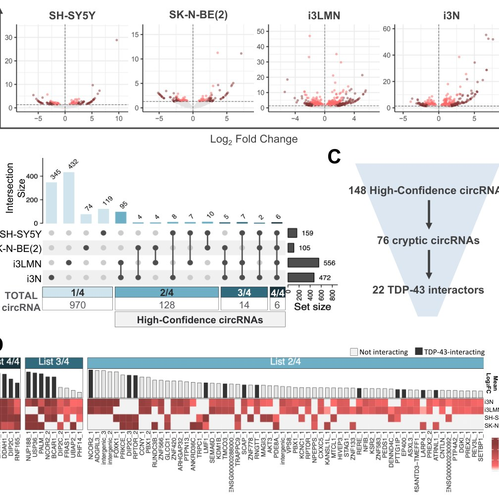
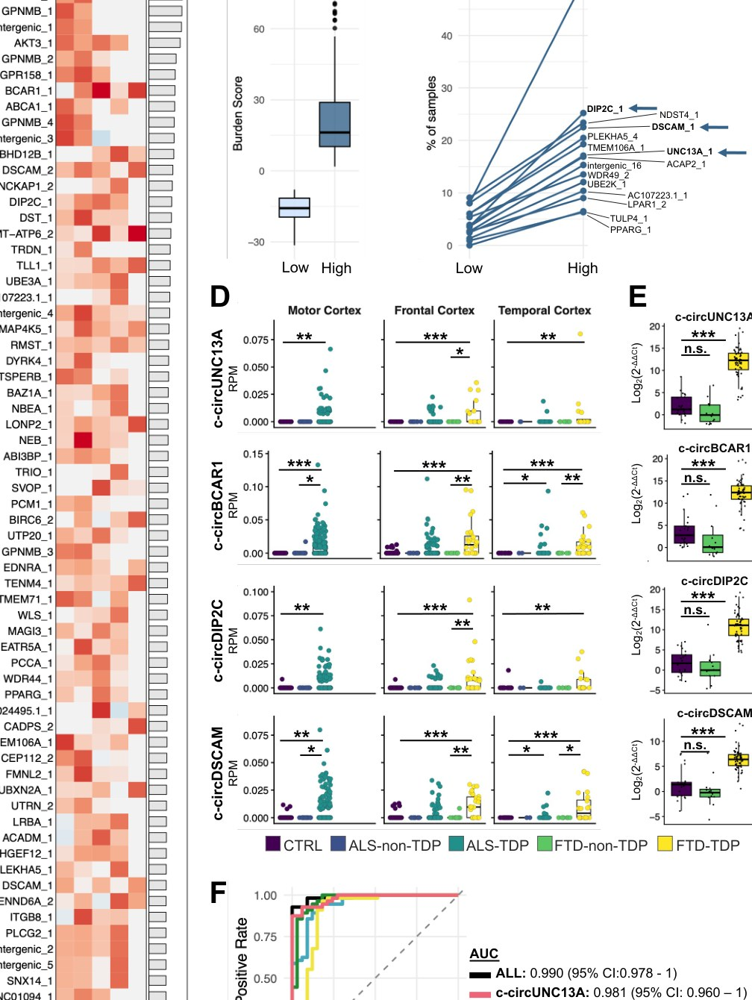
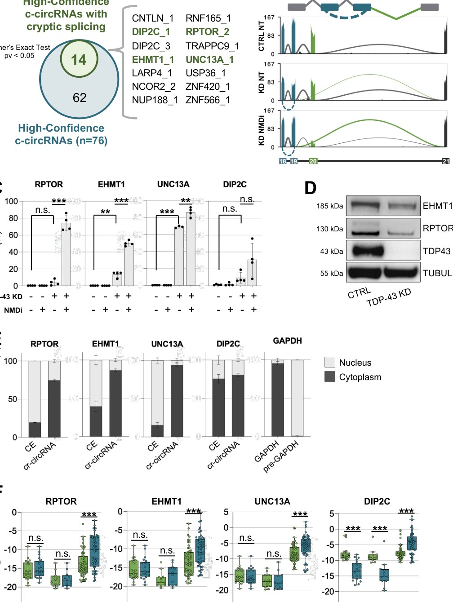
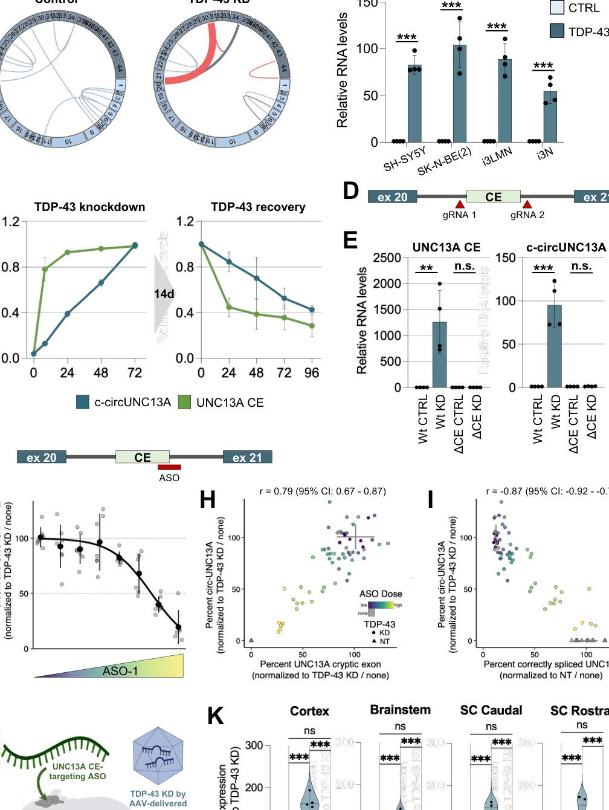

Жасырын сақина тәрізді РНК молекулалары қауіпті нейродегенеративті ауруды көрсетеді
{kind=link}

Бүйірлік амиотрофиялық склероз және маңдай-самақ деменциясы кезінде TDP-43 ақуызы жасуша ядросында дұрыс жұмыс істемейді. Соның салдарынан генетикалық нұсқаулардың өңделуі бұзылып, бұрын белгісіз сақина тәрізді РНК молекулалары пайда болады. Ғалымдар бұл аномалияларды ми тіндерінен табуды үйреніп, дәл диагностика жасау перспективаларын ашты. Сонымен қатар, мұндай молекулалардың бірі аурудың негізгі генімен байланысты, бұл жаңа дәрілердің тиімділігін бақылауға көмектеседі.
Басты ойлар
- TDP-43 ақуызының тапшылығы аномальді сақина тәрізді РНК түзілуін бастайды.
- Жаңа әдіс ми патологиясын 0.99 AUC дәлдігімен анықтауға мүмкіндік береді.
- UNC13A генінен шыққан сақина тәрізді РНК жаңа дәрілердің биомаркері бола алады.
Толығырақ
TDP-43 ақуызы қалыпты жағдайда жүйке жасушаларының ядросында рибонуклеин қышқылдарының жетілуін бақылайды, бірақ бүйірлік амиотрофиялық склероз (БАС) пен маңдай-самақ деменциясында (МСД) ол ядродан шығып кетеді. Авторлар ядролық TDP-43 тапшылығы адамның нейрондық жасушалық модельдерінде ерекше криптикалық сақина тәрізді РНК-лардың (c-circRNA) пайда болуына әкелетінін анықтады. Өлгеннен кейінгі ми тіндерінің транскриптомдық деректерін талдау бұл сақина тәрізді молекулалардың TDP-43 патологиясы бар БАС және МСД жағдайларына тән екенін растады.
Зерттеушілер орталық жүйке жүйесі тіндеріндегі патологияны 0.99 AUC көрсеткішімен анықтауға мүмкіндік беретін жоғары сезімтал әдістерді әзірледі. Мұндай сақина тәрізді молекулалардың түзілуі сызықтық сплайсинг қателерімен сәйкес келіп, өмірлік маңызды RPTOR және EHMT1 ақуыздарының жоғалуына әкелетіні анықталды. Атап өткен жөн, бұл молекулалардың бірі БАС-тың негізгі генетикалық факторы болып табылатын UNC13A генінен түзіледі.
UNC13A криптикалық экзонын басу культивацияланған нейрондарда да, тірі ағзада да c-circUNC13A деңгейін төмендетеді. Бұл табылған сақина тәрізді молекуланы жаңа терапия әдістерін клиникалық сынақтарда дәрінің әсерін бағалау үшін әлеуетті биомаркерге айналдырады. Бұл жұмыс нейродегенерация кезіндегі РНК бұзылуларының іргелі механизмдерін ашады.
Шектеулер
Қорытындылар жасушалық модельдер мен адамның өлгеннен кейінгі тіндерін талдауға негізделген.
Мақаланың толық аудармасы
Түйіндеме
TDP-43 ядролық деңгейінің төмендеуі бүйірлік амиотрофиялық склероз (БАС) және маңдай-самай деменциясының (МСД) айқындаушы патологиялық белгісі болып табылады, бұл РНҚ процессингінің кең ауқымды бұзылуына, соның ішінде криптикалық экзондардың түзілуіне әкеледі. Осы жұмыста біз TDP-43-ті адамның әртүрлі нейрондық жасушалық модельдерінде сақиналы РНҚ (circRNA) биогенезінің реттеушісі ретінде анықтадық және оның дисфункциясы de novo криптикалық сақиналы РНҚ-лардың (ccircRNA) түзілуін қоздыратынын көрсеттік.
Маңызды
TDP-43 дисфункциясы БАС және МСД патологиясының маркерлері ретінде қызмет ететін ерекше криптикалық сақиналы РНҚ-лардың (ccircRNA) пайда болуына әкеледі.
Өлімнен кейінгі ми транскриптомикалық деректерін талдау TDP-43 патологиясы бар БАС және МСД жағдайларына тән ccircRNA кіші жиынын анықтауға мүмкіндік берді. Сонымен қатар, біз circRNA-ны анықтау үшін айналмалы-сақиналы амплификацияға (rolling-circle amplification) негізделген жоғары сезімтал талдау әдістерін әзірледік, олар адамның орталық жүйке жүйесінің тіндеріндегі TDP-43 патологиясын 0,99 AUC көрсеткішімен ажыратуға мүмкіндік береді.
Түсіндірме
AUC (ROC қисығы астындағы аудан) — классификация сапасының көрсеткіші; 0,99 мәні әдістің ауру және сау үлгілерді ажыратудағы дерлік мінсіз дәлдігін білдіреді.
Біз c-circRNA-лардың сызықтық сплайсингтің криптикалық оқиғаларымен бір мезгілде туындауы мүмкін екенін анықтадық, бұл RPTOR және EHMT1 сияқты ауру үшін маңызды ақуыздардың жоғалуына әкелетін РНҚ процессингі бұзылысының күрделі «ыстық нүктелерін» ашады. Айта кетейік, осы c-circRNA-лардың бірі UNC13A генінен бастау алады, оның криптикалық экзоны бұрын БАС/МСД бойынша негізгі GWAS хиттерінің бірімен байланыстырылған және сплайсингті модуляциялайтын антисесстік олигонуклеотидтер (ASO) арқылы терапиялық нысана ретінде зерттелуде.
Абайлаңыз
Зерттеу өлімнен кейінгі тіндер мен жасушалық модельдерге негізделген; клиникалық маңыздылығын растау үшін тірі науқастарда қосымша зерттеулер қажет.
Біз c-circUNC13A-ның сызықтық криптикалық транскриптпен бірлесіп реттелетінін және UNC13A криптикалық экзонын басу мәдениеттегі нейрондарда және in vivo жағдайында c-circUNC13A деңгейінің төмендеуіне әкелетінін көрсеттік, бұл оның UNC13A-ға бағытталған жаңа терапия әдістері үшін әсер ету тиімділігін бағалайтын биомаркер ретіндегі әлеуетін көрсетеді. Жалпы алғанда, бұл жұмыс TDP-43 дисфункциясының жаңа молекулалық механизмін анықтайды, бұл ауру патогенезін түсінуге және өте қажет патология биомаркерлерін әзірлеуге жаңа жолдар ашады.
Кіріспе
TDP-43 ақуызының цитоплазмада жиналуы мен ядролық пулының азаюы амиотрофиялық бүйірлік склероздың (АБС) және лобно-сопақша деменцияның (ЛВД) шамамен 50% жағдайларының маңызды патоморфологиялық белгісі болып табылады. TDP-43 — бұл РНК сплайсингі мен полиаденилирленуін қоса алғанда, РНК процессингінің көптеген аспектілеріне қатысатын РНК-байланыстырушы ақуыз. Ядролық TDP-43 жоғалуы жаңа сплайсинг және терминация оқиғаларының (криптикалық оқиғалар; CEs) түзілуіне әкеледі. CEs басым бөлігі ақуыздың жоғалуына Нонсенс-орталықтандырылған ыдырау (NMD) немесе транскрипт пенуі арқылы әкеледі, ал кейбір жағдайларда криптикалық полиаденилирлену РНК тұрақтылығының жоғарылауы арқылы ақуыз экспрессиясының артуын туындайды. Жағдайлардың азшылығында CEs рамада болады және мерзімінен бұрын тоқтау кодондарын қамтымайды, бұл криптикалық пептидтер (CP) деп аталатын қосымша пептидтердің пайда болуына әкеледі.
Түсіндірме
Криптикалық оқиғалар (CEs) — жасуша ядросында TDP-43 ақуызының қалыпты функциясының жоғалуы салдарынан пайда болатын қалыптан тыс РНК процессингінің нұсқалары.
Криптикалық РНК процессингінің өзгерістері аурудың патогенезі мен үдеуіне маңызды екендігі көрсетілді, ал жеке CEs қалпына келтіруге бағытталған мақсатты терапиялар қазіргі уақытта клиникалық сынақтардан өтуде. CEs мен CPs ауру жағдайына ерекше тән болуы мүмкін және пациенттердің тіндеріндегі TDP-43 дисфункциясының дәрежесін анықтау және мөлшерлеу үшін қолданылған. Бұл ерекшелік биологиялық сұйықтықтарда биомаркерлерді жасау үшін де әлеуетке ие. Алайда CEs биологиялық сұйықтықтарда тұрақсыз және жиі жасушаішілік ыдырауға ұшырайды. CPs жұлын сұйықтығы мен плазмада анықталды, бірақ олардың әдетте төмен мөлшерде болуы масс-спектрометрия және антиденелерге негізделген талдаулар арқылы анықтауды шектеуі мүмкін, бұл анағұрлым ерекше әрі сезімтал талдау әдістерінің қажеттілігін көрсетеді. Нәтижесінде, TDP-43 дисфункциясының сенімді биомаркерлері саланың шешілмеген маңызды мәселесі болып қала береді.
Сақиналы РНК-лар (circRNAs) ковалентті тұйықталған сақина құрылымымен сипатталатын эндогендік РНК-лардың класы болып табылады. Мұндай молекулалар соңғы 10 жыл ішінде секвенирлеуге дайындық әдістері мен талдаудағы жетістіктердің арқасында назар аударды, олар эукариоттарда барлық жерде экспрессияланатынын және нейрондық тіндерде байытылғанын көрсетті. Сондай-ақ сақиналы РНК деңгейлері Альцгеймер ауруын қоса алғанда, көптеген патологиялық жағдайларда бұзылатыны хабарланды. TDP-43 дисфункциясы circRNA экспрессиясына әсер ете ала ма, жоқ па, ол әлі зерттелмеген.
Маңызды
TDP-43 функциясының жоғалуы сызықтық аналогтарға қарағанда тұрақтырақ және нейродегенеративті аурулардың жоғары дәлдіктегі биомаркерлері бола алатын жаңа криптикалық сақиналы РНК-лардың (c-circRNAs) түзілуіне әкеледі.
Біз адамның өсірілген нейрондарында TDP-43 жоғалуы circRNAs көлемінде ауқымды өзгерістерге, сондай-ақ жаңа сақиналы РНК-лардың (криптикалық circRNAs, c-circRNAs) түзілуіне әкелетінін анықтадық. Бұл c-circRNAs FTD және ALS кезінде TDP-43 патологиясы зақымдаған қыртыстық және жұлын аймақтарында таңдамалы түрде жиналып, TDP-43 протеинопатияларын өте жоғары сезімталдықпен және ерекшелікпен ажыратады. Біз c-circRNAs дәл сол гендердің ішінде басқа CEs-пен бірге пайда болуы мүмкін екенін, бірақ сызықтық аналогтарына қарағанда тұрақтырақ және оңай анықталатынын анықтадық. РНК-ның бұл күрделі қате процессинг оқиғалары аутофагия сияқты нейродегенерацияда бұзылған биологиялық жолдарда негізгі рөл атқаратын ақуыздардың жоғалуына әкелуі мүмкін, мұның мысалы RPTOR болып табылады. Соңында, біз UNC13A локусынан c-circRNA анықтадық, ол жерде ALS ауруының үдеуімен байланысты криптикалық экзон да анықталады және қазіргі уақытта клиникалық сынақтарда нысана болып табылады. Біздің жұмысымыз UNC13A c-circRNA және криптикалық экзонның бірлесіп реттелетінін және криптикалық экзонды түзететін терапевтік ASO-лар c-circRNA-ны да қалпына келтіретінін көрсетеді, бұл оның сплайсингті ауыстыру тәсілдері үшін нысанамен байланысу биомаркері ретіндегі әлеуетін растайды.
Нәтижелер
TDP-43 жойылуы дифференциалды circRNA экспрессиясын индукциялайды
TDP-43 РНҚ-ны өңдеудің көптеген кезеңдеріне қатысады, сондықтан біз оның circRNA деңгейлері мен биогенезін де реттейтінін зерттедік. Біз нейрондық TDP-43 нокдауны бойынша төрт эксперименттен алынған total RNA-seq деректерін зерттедік: екеуі нейробластома жасушалық желілерінде (SH-SY5Y және SK-N-BE(2)) және екеуі hiPSC-тен алынған нейрондық модельдерде, атап айтқанда төменгі моторлы нейрондарда (i3LMN) және кортикальды нейрондарда (i3N) жүргізілді (Сурет S1A және S1B). CIRI2 құралын қолдана отырып, біз көптеген circRNA-ларды анықтадық: SH-SY5Y-де 4761, SK-N-BE(2)-де 2204, i3LMN-де 6939 және i3N-де 10097 (Сурет S1C), оның ішінде 1552-сі барлық 4 деректер жиынтығында анықталды (Сурет S1D). Қысқа оқылымды РНҚ секвенирлеуінде circRNA мөлшерін анықтау кері сплайсинг түйісуін (BSJ) анықтауға негізделеді — бұл circRNA-ға нақты қатысты жалғыз аймақ, бұл кәдімгі RNA-seq-тегі сызықтық РНҚ-лармен салыстырғанда circRNA-ны анықтау сезімталдығын айтарлықтай төмендетеді. Нәтижесінде, әртүрлі деректер жиынтығында анықталған циркулярлы түрлердің беттесуі сызықтық түрлерге қарағанда төменірек (Сурет S1D). Дегенмен, дифференциалды экспрессия талдауы circRNA-ларда айтарлықтай өзгерістерді анықтады (Сурет 1A): барлығы 1118 түрлі circRNA жоғарылады (Сурет 1B) және 1152-сі төрт деректер жиынтығы бойынша төмендеді (Сурет S1E).
Маңызды
TDP-43 жойылуы circRNA экспрессиясында айтарлықтай өзгерістерге (1118-і жоғарылаған, 1152-сі төмендеген) әкеледі, бұл өзгерістер транскрипцияға емес, кері сплайсинг тиімділігіне байланысты.
Өзгерістер пре-мРНҚ деңгейіндегі өзгерістер салдарынан туындады ма немесе тікелей кері сплайсингтегі өзгерістермен индукцияланды ма, соны түсіну үшін біз сәйкес сызықтық изоформалардың экспрессиясын зерттедік және circRNA-ларды былайша жіктедік: «инвариантты» (егер сәйкес сызықтық изоформа айтарлықтай өзгеріс көрсетпесе), «конкордантты» (егер екеуі де бір бағытта өзгерсе) және «дискордантты» (егер олар қарама-қарсы бағытта өзгерсе). Барлық желілер бойынша circRNA-лардың көпшілігі (65–97%) «инвариантты» немесе «дискордантты» санаттарына жатты, бұл circRNA өзгерістері транскрипциядағы өзгерістермен анықталмайтынын көрсетеді (Сурет S2A). TDP-43 нокдауны мен бақылау шарттары арасындағы циркулярлы-сызықтық қатынастағы (ΔCLR) өзгерістер талдауы circRNA мөлшеріндегі өзгерістер ΔCLR өзгерістерін жақын көрсететінін көрсетті, бұл дифференциалды circRNA экспрессиясы бірінші кезекте иелік ген экспрессиясындағы өзгерістерді емес, кері сплайсинг тиімділігінің өзгергенін көрсететінін растайды (Сурет S2B).
Біз circRNA жоғарылауы әртүрлі жасуша түрлері бойынша ортақ екенін бағаладық және анықталған 1118 өзгерген circRNA-ның 970-і бір жасушалық желіге тән екенін, ал қалғандары төрт модельдің кемінде екеуінде жоғарылағанын анықтадық (Сурет 1B). Беттесу деңгейінің төмендігі бірінші кезекте олардың басқа жасушалық модельдерде анықталмауымен байланысты болды (Сурет S3A және S3B). Қолжазба барысында біз кемінде 2 деректер жиынтығында өзгерген circRNA-ларды «Жоғары сенімділіктегі circRNA-лар» (High-Confidence circRNAs) деп атаймыз (Сурет 1C).
Түсіндірме
circRNA — бұл кері сплайсинг арқылы түзілетін сақиналы РНҚ молекулалары, мұнда интронның 3'-ұшы экзонның 5'-ұшымен бірігеді, бұл оларды деградацияға төзімді етеді.
Содан кейін біз TDP-43 кері сплайсингті тікелей РНҚ байланысуы арқылы реттей ме деген сұрақты ортаға тастадық және кері сплайсинг экзондарын қоршап тұрған интрондарда TDP-43 байланысу орындарының бар-жоғын зерттедік, өйткені олардың циркуляризацияда маңызды рөл атқаратыны белгілі (Сурет S3C). Жалпыға қолжетімді TDP-43 CLIP-seq деректерін пайдалана отырып (Сурет S3D), біз TDP-43 нокдаунынан кейін өзгермейтін circRNA-лардың бақылау жиынтығымен салыстырғанда жоғарылаған circRNA-лардың екі жанындағы интрондардың кемінде біреуінде TDP-43 байланысуының айтарлықтай байығанын байқадық (Сурет S3E және S3F). Байқау керек, байыту бірнеше жасушалық модельдерде жоғарылаған circRNA түрлері үшін айқынырақ болды (Сурет S3F).
TDP-43 жойылуы криптикалық circRNA (c-circRNA) түзілуіне ықпал етеді
Жоғарылаған circRNA-лар арасында біз тек TDP-43 нокдаунынан кейін анықталған және бақылау шарттарында жоқ кіші топты анықтадық. Бұл TDP-43 дисфункциясының бұрын танылмаған салдарын ашып береді: de novo циркулярлы РНҚ-лардың пайда болуы. Бұл криптикалық оқиғалар анықтамасын көрсететіндіктен, біз бұл сыныпты «криптикалық circRNA-лар» (c-circRNA) деп жіктедік (Сурет 1A). Барлығы біз 543 c-circRNA-ны анықтадық (Сурет S3G), олардың 76-сы жоғары сенімділік тобына жатады (Сурет 1C). Бұл жоғары сенімділіктегі криптикалық circRNA-лар Сурет 1D-де көрсетілген, олар әрбір circRNA анықталған желілер санына және TDP-43 нокдаунынан кейін олардың индукция деңгейіне қарай реттелген. Байқау керек, бұл circRNA-лардың 22-сі тікелей TDP-43 байланысуын көрсетті (Сурет 1C және 1D).
Абайлаңыз
Зерттеу жасушалық желілер мен hiPSC модельдері негізінде жүргізілген; TDP-43 байланысуы мен circRNA түзілуі арасындағы анықталған корреляциялар себеп-салдар байланысын растау үшін функционалды тексеруді талап етеді.
c-circRNAs БАС және ФЛД постморталды ОЖЖ-де TDP-43 патологиясымен ерекше түрде байланысады
Өліктен кейінгі тіндерді тұтастай (bulk tissue) талдау кезінде TDP-43 дисфункциясына байланысты дифференциалды экспрессияланатын транскрипттерді анықтау қиынға соғуы мүмкін, өйткені тек жасушалардың азгина бөлігі ғана TDP-43 ядролық жоғалуын көрсетеді. Екінші жағынан, криптикалық оқиғаларды анықтау сенімдірек өлшем болып табылады, өйткені олар физиологиялық жағдайларда жоқ. Сондықтан біз New York Genome Center (NYGC) АМС консорциумының RNA-seq деректеріндегі c-circRNAs болуын зерттедік. Бұл когорта АМС және маңдай-самал деменциясы (МСД) жағдайларының өліктен кейінгі тіндерінен, сондай-ақ ауруы жоқ бақылау топтарынан алынған орталық жүйке жүйесінің (ОЖЖ) әртүрлі аймақтарын қамтиды, жалпы алғанда 1863 үлгіні құрайды (S4A-сур.). Шатастыратын факторлардың әсерін барынша азайту үшін біз патологиялық үлгілердің кітапхана тереңдігі, РНК тұтастығы көрсеткіші (RIN), қайтыс болған кездегі жасы немесе жынысы бойынша бақылаудан айтарлықтай ерекшеленбейтініне көз жеткіздік (S4B–E-сур.).
Түсіндірме
> Криптикалық оқиғалар — бұл қалыпты жағдайда пайда болмайтын, бірақ TDP-43 сияқты ақуыздардың жұмысы бұзылған кезде пайда болатын қалыптан тыс РНК сплайсинг үлгілері.
Біз бақылау және ALS-TDP үлгілерінде экспрессияланатын сақиналы РНК-ларды (circRNAs) сандық бағалау үшін CIRI2 қолдандық және жарты миллионнан астам circRNAs анықтадық (S5A және S5B-сур.). Бақылау топтарымен салыстырғанда ALS-TDP үлгілерінің көбірек санында анықталған circRNAs табу үшін біз байыту талдауын жүргіздік (S5C және S5D-сур.). Осы топтың ішінде біз c-circRNAs бақылау үлгілерінің 5%-дан азында экспрессияланатын молекулалар ретінде анықтадық (S5C-сур.). Жалпы алғанда, біз 466 түрлі c-circRNAs анықтадық (S5E-сур.), олардың ішінде 65-і бақылау үлгілерімен салыстырғанда ALS-TDP-да кем дегенде үш есе байытылғанын көрсетті (2A және S5F-сур.).
Содан кейін біз c-circRNAs мөлшері TDP-43 дисфункциясының дәрежесіне тәуелді екенін тексердік және TDP-43 ядролық функциясын жоғалту ауқымын бағалау үшін TDP-43 криптикалық жүктеме ұпайын [15] қолдандық. Біз үлгілерді «төмен жүктеме» тобына (жүктеме ұпайының ең төменгі квартилі) және «жоғары жүктеме» тобына (жүктеме ұпайының ең жоғары квартилі) жіктедік (2B және S6A-сур.), топтар арасында үлгілердің тең көлемін қамтамасыз еттік және секвенирлеу тереңдігінде айырмашылықтардың жоқтығын растадық (S6B-сур.). Анықталған c-circRNAs арасында төмен жүктеме тобында ешқайсысы байытылған жоқ, ал жоғары жүктеме тобында 15-і айтарлықтай байытылды (2C-сур.), бұл оларды TDP-43 патологиясының жақсы маркерлері ретінде анықтады.
Маңызды
> 1863 ОЖЖ үлгісіне талдау жасау TDP-43 патологиясының жоғары жүктемесі бар топта айтарлықтай байытылған 15 c-circRNAs анықтады, бұл олардың ауру маркерлері ретіндегі әлеуетін растайды.
TDP-43-ке сезімтал 15 c-circRNAs арасында c-circUNC13A, c-circBCAR1 және c-circDIP2C біздің барлық жасушалық модельдерімізде анықталды (2C-сур.) және өздерінің шектес интрондары шегінде TDP-43-пен байланысады (S7A-сур.). Тағы бір маңызды үміткер c-circDSCAM болды, ол талданған бес тіннің бесеуінде де криптикалық экспрессия профилін көрсетеді (2A-сур.) және жоғары жүктеме тобындағы ең байытылған circRNAs қатарына кіреді (2C-сур.). Біз барлық төрт c-circRNAs сау бақылаумен ғана емес, сонымен қатар TDP-43 емес АМС формаларымен (SOD1 немесе FUS мутацияларымен байланысты) немесе МСД (TAU немесе FUS байланысты) әсер еткен адамдармен салыстырғанда да TDP-43 патологиясы бар ALS және FTD үлгілерінде (ALS-TDP және FTD-TDP) өзіндік байытуды көрсететінін растадық (2D және S7B-сур.). Маңыздысы, бұл c-circRNAs ешқайсысы олардың сәйкес сызықтық изоформаларының экспрессиясының айтарлықтай өсуімен байланысты емес (S7C-сур.). Олардың модельдерде сенімді анықталуы мен ауруға тән ерекшелігіне сүйене отырып, біз бұл төрт c-circRNAs өліктен кейінгі тіндерде мақсатты түрде тексеру үшін таңдап алдық.
c-circRNAs тіньдегі TDP-43 патологиясын сезімтал анықтауға мүмкіндік береді
Өліктен кейінгі ми тінін талдаудағы негізгі қиындық — TDP-43 патологиясы бар жасушалар тек шағын азшылықты құрайды. Шын мәнінде, STMN2 криптикалық экзоны сияқты жоғары дәрежедегі криптикалық оқиғалардың өзі жиі анықталмайды немесе bulk RNA-seq деректер жиынтығында тек бірнеше оқулармен қолдау табады [30]. Бұл шектеуді еңсеру үшін біз тіндерде c-circRNAs анықтауды жақсарту мақсатында амплификация стратегиясы мен мақсатты талдауларды әзірледік. Біз тиімді айналмалы-сақиналы кері транскрипцияны (RC-RT) жүзеге асыратын II топ интронының кері транскриптазасын (RT) Induro қолдандық [31] (S8A-сур.), ол BSJ бірнеше көшірмелері бар ұзын кДНК молекулаларын түзеді және осылайша circRNAs анықтауды күшейтеді (S8B-сур.).
Абайлаңыз
> Зерттеу адамның өліктен кейінгі тіндері мен жасушалық модельдерінде орындалған; биомаркерлер экспрессиясының патологиямен корреляциясы ерте сатыларда тікелей себеп-салдарлық байланысты әрқашан дәлелдей бермейді.
Induro мен айналмалы-сақиналы амплификацияны жүзеге асыра алмайтын кері транскриптаза SuperScript IV тікелей салыстыруы сызықтық РНК матрицасы үшін салыстырмалы qPCR сигналдарын көрсетті, ал Induro сақиналы РНК матрицасынан келетін сигналды 20 еседен астам арттырды (S8B және S8C-сур.), бұл RC-RT тек сақиналы РНК-ны таңдамалы түрде күшейтетінін, ал сызықтық РНК-ны емес екенін көрсетті.
Біз сау бақылаулардың (n=21) және TDP-43 патологиясы бар (GRN n=17, C9-FTD n=14, споралық FTLD-TDP n=25) немесе онсыз (FTD-FUS n=12) FTD-TDP пациенттерінің маңдай қыртысының РНК-ларына RC-RT, содан кейін BSJ-ге тән TaqMan талдауларын қолдандық. Барлық төрт таңдалған c-circRNAs FTD-FUS және сау бақылаулармен салыстырғанда FTD-TDP үлгілерінде айтарлықтай жоғары сигнал көрсетті (2E-сур.). Маңыздысы, бұл айырмашылық барлық FTD-TDP кіші түрлерінде анықталды (S8E-сур.).
Бұл c-circRNAs FTD-TDP бақылаулардан және FTD-TDP емес жағдайлардан ажырату қабілетін бағалау үшін біз ROC талдауларын жүргіздік. Төрт c-circRNAs әрқайсысы күшті ажырату қабілетін көрсетті (AUC 0.90–0.98), ал біріктірілген модель 0.99 AUC жетті, бұл жоғары болжамды дәлдікті көрсетеді және олардың TDP-43 ақуыз ауруының биомаркерлері ретіндегі әлеуетін қолдайды (2F-сур.).
мәтін
c-circUNC13A UNC13A криптикалық экзонына қарағанда тұрақтырақ
C-circРНҚ-лар арасында c-circUNC13A өзінің UNC13A CE және GWAS қауіпті SNP-леріне жақындығына байланысты ерекше қызығушылық тудырады, сондықтан біз оның сипаттамаларын терең талдадық. UNC13A бірнеше сақиналы изоформаларды өндірсе де, олардың кейбіреулері TDP-43 азаюымен артады (Rasm SN), тек 21-30 экзондарды қамтитын изоформа ғана (бұрын «c-circUNC13A» деп аталған) талданған барлық деректер жиынтығында криптикалық критерийлерге жауап берді (Rasm 4A және Rasm SN). Біз мұны төрт жасушалық желіде RT-qPCR көмегімен растадық (Rasm 4B және Rasm SN) және сызықтық UNC13A CE-ден айырмашылығы, RNase R-мен өңдеуге төзімділігін көрсету арқылы оның сақиналы табиғатын дәлелдедік (Rasm SN).
Маңызды
c-circUNC13A TDP-43 азайғанда түзілетін ең тұрақты изоформа болып табылады және TDP-43 қалпына келгеннен кейін 24 сағат өткен соң өз деңгейінің 80 пайызын сақтап қалады, ал UNC13A CE деңгейі 40 пайызға дейін түседі.
Кейін біз UNC13A CE және c-circРНҚ әртүрлі тұрақтылыққа ие ме деген сұрақты ортаға тастадық. Біз эндогендік TDP-43 PROTAC қосылуы арқылы тез деградацияға ұшырауы мүмкін i3Ns желісін пайдаландық және TDP-43 азайғаннан кейін әртүрлі уақыт нүктелерінде UNC13A CE және c-circРНҚ-ны тексердік. UNC13A CE деңгейлері тез көтеріледі және өңдеуден 24 сағат өткен соң платоға шығады. Керісінше, c-circUNC13A бүкіл уақыт ішінде баяуырақ және прогрессивті өсуді көрсетті және 72 сағат бойы жинақталуын жалғастырды (Rasm 4C, сол жақ панель). Кейін біз PROTAC-пен 14 күндік TDP-43 азаюынан кейін TDP-43 деңгейлері қалпына келгенде UNC13A CE және c-circРНҚ қалай сақталатынын салыстырдық — бұған PROTAC-ты каталитикалық тұрғыдан белсенді емес бәсекелеспен (PROTACi) алмастыру арқылы қол жеткізілді. UNC13A CE деңгейлері тез төмендеп, 24 сағат ішінде бастапқы мөлшерінің шамамен 40 пайызына жетті, c-circUNC13A болса айтарлықтай баяуырақ ыдырау кинетикасын көрсетті, бұл ұзағырақ жартылай ыдырау кезеңіне сәйкес келеді: ол бірдей уақыт нүктесінде бастапқы деңгейінің 80 пайызын сақтап қалды және кейіннен біртіндеп төмендеді (Rasm 4C, оң жақ панель). Бұл нәтижелер c-circUNC13A сәйкес келетін сызықтық криптикалық транскриптке қарағанда әлдеқайда тұрақты екенін көрсетеді.
c-circUNC13A және UNC13A CE бірлесіп реттеледі
UNC13A криптикалық экзонының қосылуын түзетуге бағытталған клиникалық сынақтар жүріп жатыр. c-circUNC13A және UNC13A CE екеуі де 20-21 экзондардың дұрыс сплайсингіне функционалды емес баламалар болғандықтан (Rasm SN), олар бірлесіп реттеле ме немесе UNC13A CE-ні басу c-circUNC13A-ның көбеюіне әкеле ме, мұны түсіну өте маңызды. Сондықтан біз UNC13A CE аймағы CRISPR/Cas9 көмегімен геномды өңдеу (ΔCE) арқылы жойылған SHSY-5Y жасушаларын талдадық (Rasm 4D). Бұрын хабарланғандай, TDP-43 азайғанда ΔCE желісінде UNC13A CE өндірілмеді. Сондай-ақ, біз ΔCE желісінде TDP-43 нокдауны кезінде c-circUNC13A индукциясы да толығымен жойылғанын анықтадық, бұл криптикалық экзонды өндіруші аймақ сақиналы изоформаның экспрессиясы үшін қажет екенін көрсетеді (Rasm 4E). Шешілуі керек маңызды нүкте - ΔCE желісінде c-circUNC13A-ның басылуы 20-интрон тізбегінің бір бөлігінің жойылуымен байланысты ма немесе бұл UNC13A CE қалыптасуының басылуына байланысты ма. Сондықтан біз UNC13A CE-ні азайтатын әртүрлі сплайсингті өзгертуші ASO-лардың c-circUNC13A-ға әсерін тексердік. Нысаналы емес ASO-лар UNC13A CE және c-circUNC13A-ға әсер етпесе де, UNC13A CE ASO-лары circРНҚ деңгейінің 80 пайызға дейін төмендеуіне әкелді (Rasm SN). Кейін біз жоғары тиімді ASO-ның әртүрлі дозаларын пайдаландық (Rasm 4F) және circРНҚ-ға дозаға тәуелді төмендеу эффектісін бақыладық (Rasm 4G), бұл да UNC13A CE-мен оң корреляцияны көрсетті (Rasm 4H). Маңыздысы, c-circUNC13A да дұрыс сплайсинг жасалған UNC13A изоформасымен теріс корреляцияны көрсетті (Rasm 4I), бұл c-circUNC13A деңгейлерін UNC13A құтқаруының әлеуетті көрсеткіші ретінде қолдайды.
Түсіндірме
ASO (antisense oligonucleotides) — РНҚ-мен байланысып, оның трансляциясын блоктай алатын немесе сплайсинг процесін өзгерте алатын қысқа синтетикалық молекулалар.
Кейін біз UNC13A криптикалық экзонының қосылуы және c-circUNC13A қалыптасуының үйлестірілген реттелуі in vivo да орын алатынын тексердік. UNC13A CE кеміргіштерде сақталмағандықтан, біз бүкіл адам UNC13A локусын көрсететін BAC трансгендік тышқанын пайдаландық (Rasm 4J). AAV арқылы жеткізілген Tardbp miRNA арқылы TDP-43 нокдаунынан кейін, c-circUNC13A RT-qPCR арқылы орталық жүйке жүйесінде оңай анықталатын болды. UNC13A CE-ге бағытталған ASO-ның интрацеребровентрикулярлық инъекциясы c-circUNC13A қалыптасуын басты (Rasm 4K), бұл UNC13A қате сплайсингінің терапиялық модуляциясы in vivo c-circРНҚ-ның азаюымен байланысты екенін көрсетеді.
Жалпы алғанда, бұл нәтижелер circUNC13A-ның UNC13A CE-ге қарағанда тұрақтырақ және анықталуы оңайырақ екенін, бұл екі құбылыстың биогенезі байланысты екенін көрсетеді және c-circUNC13A-ның UNC13A CE-ні модуляциялайтын терапиялар үшін нысананы анықтау биомаркері ретіндегі әлеуетін атап көрсетеді.
Талқылау
Біз c-circRNA-ларды TDP-43 дисфункциясының жаңа салдары ретінде анықтаймыз. Біз ядролық TDP-43 жоғалуы back-splicing (кері сплайсинг) процесінде кең ауқымды өзгерістерді және физиологиялық жағдайларда жоқ de novo circRNA-лардың қалыптасуын тудыратынын көрсетеміз. Бұл c-circRNA-лар TDP-43 патологиясы бар ALS және FTD жағдайларымен ерекше байланысты, өздерінің сызықтық криптикалық баламаларына қарағанда жоғары тұрақтылық пен тамаша анықталу қабілетін көрсетеді және РНҚ-ның бұрын ескерілмеген өңдеу қабаттарын аша алады. Соңында, біз c-circUNC13A-ның ауруға қатысты UNC13A CE-мен механикалық байланысты екенін және UNC13A сплайсингін түзетуге бағытталған жаңа терапиялар үшін нысаналы биомаркер ретінде қызмет ете алатынын көрсетеміз.
Маңызды
TDP-43 жоғалуы тұрақты c-circRNA-лардың түзілуін іске қосады, олар патологияның, атап айтқанда, UNC13A геніндегі критикалық сплайсинг оқиғасымен байланысты c-circUNC13A-ның жоғары сезімтал маркерлері болып табылады.
TDP-43 ұзақ уақыт бойы канондық сплайсинг репрессоры ретінде танылғанымен, біздің нәтижелеріміз бұл РНҚ-байланыстырушы ақуыздың circRNA биологиясындағы қосымша рөлін анықтайды. Физиологиялық circRNA-лардың мөлшерін реттеуден басқа, TDP-43 криптикалық circRNA-лардың (c-circRNA) қалыптасуын басушы қызметін атқарады. c-circRNA-ларды қоршап тұрған интрондарда TDP-43 байланысу орындарының байытылуы TDP-43-тің осы локустардағы қалыптан тыс back-splicing-тің алдын алудағы тікелей рөлін растайды. Криптикалық back-splicing-ті тудыратын факторлар әлі анықталуы керек болса да, TDP-43 жойылғаннан кейін байқалатын РНҚ өңдеуіндегі кең ауқымды ақаулар, соның ішінде криптикалық сплайсинг және интрондардың сақталуы, оның азаюы қалыптан тыс back-splicing үшін қолайлы орта жасайтынын көрсетеді. Сплайсинг кинетикасындағы бұзылулар back-splicing-ке ықпал етуі мүмкін, бұл әдетте сызықтық сплайсингке қарағанда тиімсіз деп саналады, өйткені ол канондық емес сплайсинг орындары жұптаса алатын уақыт терезесін арттырады. Back-splicing реакциясы circRNA түзуші экзондарды қоршап тұрған екі интронды біріктіретін ілмек түзілуіне негізделгендіктен, TDP-43 байланысуының жоғалуы молекулааралық РНҚ өзара әрекеттесулері үшін қолжетімді интрондық төмен күрделіліктегі тізбектерді ашады және осылайша циклизацияны ынталандырады.
Түсіндірме
Back-splicing (кері сплайсинг) — бұл экзонның 3'-ұшын сол немесе жоғарырақ экзонның 5'-ұшымен біріктіру процесі, бұл сақиналы РНҚ (circRNA) түзілуіне әкеледі.
TDP-43-ке тәуелді криптикалық оқиғалардың (CE) ашылуы TDP-43 функциясының жоғалуының өзіндік молекулалық көрсеткіштерін ұсыну арқылы ALS және FTD патогенезі туралы түсінігімізді жақсартты. Алайда, іс жүзінде бірқатар кедергілер олардың биомаркер ретіндегі пайдалылығын шектейді. CE-ні қамтитын көптеген транскрипттер nonsense-mediated decay (нонсенс-делдалды ыдырау) арқылы тез ыдырайды, ал ыдыраудан қашқандары іштей тұрақсыз болып қалады және биологиялық сұйықтықтарда ыдырауға ерекше осал келеді. Біз және басқа зерттеушілер CE-нің бір бөлігі қосымша in-frame пептид тізбектерін кодтайтынын және сондықтан жаңа ақуыздарды тудыратынын анықтадық. Криптикалық пептидтерді талдаудың қазіргі әдістері перспективалы болғанымен, олар әлі де клиникалық қолдану үшін сезімталдықты арттыруды талап етеді. Екінші жағынан, circRNA-лар оларды биомаркер үміткерлері ретінде ерекше тартымды ететін қасиеттерге ие. Олардың ковалентті жабық құрылымы оларға төтенше тұрақтылықты қамтамасыз етеді және олар жасушалық РНҚ-лардың тек кішкене бөлігін құраса да, circRNA-лар экзонуклеазаларға төзімділігі арқасында биологиялық сұйықтықтар мен жасушадан тыс везикулаларда жоғары дәрежеде байытылған. Сонымен қатар, олардың сақиналы құрылымы rolling-circle (айналмалы) кері транскрипция арқылы сигналды селективті күшейтуге мүмкіндік береді, бұл тіндерде төмен мөлшері мен тез ыдырауына байланысты жиі анықталмайтын сызықтық криптикалық транскрипттерге қарағанда техникалық артықшылық береді.
Абайлаңыз
Зерттеу өлімнен кейінгі орталық жүйке жүйесі үлгілері мен жасушалық модельдерге негізделген; c-circRNA мен TDP-43 патологиясы арасындағы корреляция тірі ағзада тікелей себеп-салдар байланысын білдірмейді.
c-circRNA-лардың әлеуетті биомаркерлер ретінде қолданылуы біз анықтаған жетекші үміткерлермен (c-circUNC13A, c-circBCAR1, c-circDIP2C және c-circDSCAM) расталады. Олар өлімнен кейін алынған ALS-TDP және FTD-TDP орталық жүйке жүйесі үлгілерінде айтарлықтай байытылған және TDP-43 протеинопатиялары мен басқа түрдегі протеинопатиялар арасында тамаша ажыратуды көрсетті. Мақсатты rolling-circle күшейту тәсілін қолдана отырып, бұл молекулалар ауру топтарын дерлік толық ажыратуға қол жеткізді, мұнда біріктірілген модель 0,99 AUC-ге жетті. Жалпы алғанда, бұл нәтижелер c-circRNA-ларды TDP-43 дисфункциясының жоғары сезімтал және өзіндік молекулалық іздері ретінде растайды және олардың TDP-43 протеинопатиялары үшін биомаркер ретінде әзірленуін қолдайды.
Күтпеген бақылау мынада болды: c-circRNA-лар бір геннің ішінде басқа түрдегі қалыптан тыс сплайсинг формаларымен жиі бірге өмір сүреді. Жоғары сенімділікке ие c-circRNA-лардың шамамен бестен бір бөлігі көршілес криптикалық немесе скиптикалық экзондармен байланысты, бұл кейбір транскрипттердің TDP-43 азайғаннан кейін РНҚ-ның бұзы бұзылуының бірнеше формасына ерекше осал екенін көрсетеді. Бұрын circRNA биогенезі канондық емес сплайсинг оқиғаларымен бір уақытта болатыны туралы хабарланған еді. Мысалы, SFPQ сплайсинг факторының азаюы circRNA биогенезінде кең ауқымды өзгерістерге әкеледі, бұл жоғарыдағы интрондардың сақталуы және криптикалық сплайсинг оқиғаларымен бірге жүреді. Жақында HNRNPM-нің азаюы қалыптан тыс экзон қосылуын да, circRNA биогенезін де ынталандыратыны көрсетілді, бұл сплайсинг орнын таңдаудың бұзылуы back-splicing үшін қолайлы орта жасайды деген идеяны одан әрі қолдайды.
Криптикалық көпжақты бұзылған процессинг оқиғаларын көрсететін гендердің арасында біз UNC13A, RPTOR және EHMT1 гендерін анықтадық. Бұл транскрипттердің барлығы аберрантты сплайсингке ұшырайды, бұл мерзімінен бұрын стоп-кодондардың түзілуіне және NMD-арқылы транскрипттердің деградациясына әкеледі. UNC13A дұрыс емес сплайсингінің салдары егжей-дегжейлі сипатталғанымен, біздің жұмысымыз TDP-43 дисфункциясы криптикалық РНҚ процессингі механизмдері арқылы RPTOR және EHMT1 ақуыздарының жоғалуына әкелетінінің алғашқы дәлелін ұсынады. Маңыздысы, екі ақуыздың да дисфункциясы бұған дейін неврологиялық аурулармен байланыстырылған. RPTOR mTORC1 кешенінің маңызды құрамдас бөлігі болып табылады және оның төмендеуі mTOR сигналингін бұзады, TFEB белсендірілуіне ықпал етеді және нейродегенерацияға қатысы бар аутофагия-лизосомалық жолдарды өзгертеді. Сол сияқты, EHMT1 — нейрондардың дамуы мен синаптикалық функциясы үшін қажетті негізгі гистонметилтрансфераза, ал EHMT1 гапложетіспеушілігі немесе мутациясы ақыл-ой кемістігімен және когнитивті бұзылулармен сипатталатын ауыр нейродаму бұзылысы — Клеефстра синдромын тудырады. Бұл ақуыздардың азаюы TDP-43 нейродегенерацияға қосымша патогендік жолдар арқылы ықпал етуі мүмкін екенін көрсетеді, олардың кейбіреулері негізгі криптикалық транскрипттердің тез деградациялануына байланысты жасырын қалады.
Түсіндірме
Криптикалық сплайсинг — бұл қалыпты жағдайда кесіліп тасталатын «жасырын» аймақтардың (криптикалық экзондардың) жетілген РНҚ-ға қате қосылуы. Бұл көбінесе мерзімінен бұрын стоп-кодондардың пайда болуына және ақаулы РНҚ-ны жоятын жасушалық жүйе — NMD (nonsense-mediated decay) белсендірілуіне әкеледі, нәтижесінде маңызды ақуыздар деңгейі төмендейді.
Маңыздысы, ауруға қатысты ақуыздардың мөлшерін азайтатын дәл сол криптикалық РНҚ процессингі оқиғалары сәйкес сызықтық транскрипттердің деградациясына қарамастан, оңай анықталатын тұрақты c-circРНҚ-ларды да түзеді. Бұл айырмашылық олардың субжасушалық локализациясында да көрініс табады. NMD-ге ұшырайтын криптикалық сызықтық транскрипттер (CE) негізінен ядрода табылса, c-circРНҚ-лар цитоплазмада жиналады, онда олардың сақталу және жасушадан тыс везикулаларға (құрамында circРНҚ-лар бай екені бұған дейін көрсетілген құрылымдарға) ену ықтималдығы жоғары болады. Олардың NMD-ге төзімділігімен және домалақ шеңберлі кері транскрипция (rolling-circle reverse transcription) арқылы селективті амплификациясымен бірге, бұл ерекшеліктер пациенттерден алынған үлгілерде олардың жоғары деңгейде анықталуына ықпал етеді. Сондықтан c-circРНҚ-лар адам тіндерінде басқа жағдайда көрінбей қалатын криптикалық сплайсинг оқиғаларының тұрақты молекулалық іздері ретінде қызмет ете алады. Жасушадан тыс везикулалар мен биологиялық сұйықтықтарда c-circРНҚ-ларды бағалау осы зерттеудің аясына кірмегенімен, біздің нәтижелеріміз олардың TDP-43 дисфункциясының жасушадан тыс везикулалармен байланысты биомаркерлері ретіндегі әлеуетін бағалауға бағытталған болашақ зерттеулер үшін берік негіз бен үміткер молекулалар жиынтығын ұсынады.
Маңызды
Криптикалық сақиналы РНҚ-лар (c-circРНҚ) тез бұзылатын сызықтық транскрипттерге қарағанда цитоплазмада жиналады және деградацияға төзімді келеді, бұл оларды TDP-43 патологиясының сенімді биомаркерлеріне айналдырады.
Анықталған c-circРНҚ-лардың ішінде c-circUNC13A ерекше жағдай болып табылады, өйткені ол БАС (бүйірлік амиотрофиялық склероз) және ЛШД (маңдай-желке деменциясы) үшін ең күшті генетикалық қауіп локустарының бірінен түзіледі, ал оның сызықтық аналогы қазіргі уақытта терапиялық араласудың нысанасы болып табылады. Бірнеше ортогональды дәлелдемелер желісі c-circUNC13A мен аурумен байланысты UNC13A криптикалық экзонының механикалық түрде байланысты екенін көрсетеді. Криптикалық экзонның түзілуіне жауапты геномдық аймақтың делециясы екі транскрипттің де индукциясын жойды, ал сплайсингті ауыстыратын антисенстік олигонуклеотидтер екі түрді де дозаға тәуелді түрде басты. Бұл бақылаулар c-circUNC13A-ның TDP-43 дисфункциясының тәуелсіз жанама өнімі емес, керісінше, дәл сол патогендік дұрыс емес сплайсинг оқиғасының үйлесімді салдары екенін көрсетеді.
c-circUNC13A оны нысанамен байланысудың тартымды биомаркері (target-engagement biomarker) ететін бірнеше қасиеттерге ие. Ол сәйкес сызықтық криптикалық транскриптке қарағанда айтарлықтай тұрақты, өйткені ол TDP-43 таусылғаннан кейін біртіндеп жиналады және TDP-43 функциясы қалпына келгеннен кейін ұзағырақ сақталады. Бұл кинетикалық айырмашылықтар c-circUNC13A патологияның неғұрлым ұзақ сақталатын молекулалық ізін қамтамасыз ете отырып, TDP-43 дисфункциясының уақыт бойынша орташаланған молекулалық көрсеткіші ретінде әрекет ете алатынын көрсетеді. Бұл сплайсинг белсенділігіндегі уақытша ауытқуларды тегістей алады, сондықтан емдеуге жауапты бақылау үшін терапиялық жағдайларда ерекше құнды болуы мүмкін.
Абайлаңыз
c-circUNC13A in vitro жағдайында жоғары тұрақтылық көрсеткенімен, оның нақты клиникалық үлгілердегі (мысалы, пациенттердің жұлын сұйықтығындағы) биомаркер ретіндегі қолданылуы әлі де ауқымды зерттеулерде дәлелденуді қажет етеді.
Қорыта айтқанда, біздің нәтижелеріміз TDP-43-ке тәуелді РНҚ патологиясының парадигмасын сызықтық дұрыс емес сплайсинг шеңберінен тыс кеңейтеді және криптикалық сақиналы РНҚ-ларды ядролық TDP-43 жоғалуының бұған дейін танылмаған салдары ретінде анықтайды. Ауруға тән ерекшелікті, молекулалық тұрақтылықты және жоғары анықталу деңгейін біріктіре отырып, бұл молекулалар биомаркерлердің перспективалы жаңа класын білдіреді және TDP-43-ке тәуелді БАС пен ЛШД патологиясының негізінде жатқан РНҚ процессингінің күрделі ақаулары туралы жаңа түсініктер береді. Сонымен қатар, біздің жұмысымыз болашақта жасушадан тыс везикулалар мен басқа биологиялық сұйықтықтардағы криптикалық сақиналы РНҚ-ларды TDP-43 патологиясының биомаркерлері ретінде де, терапиялық араласудың фармакодинамикалық көрсеткіштері ретінде де бағалауды қолдау үшін негіз қалайды.
Әдістер
Адамның индуцияланған плюрипотентті діңгекті жасушалары (iPSC) мәдениеті:
Бұл зерттеуде біз кортикальды i3Neurons алу үшін адам нейрогенині-2 (NGN2) артық экспрессиясына арналған WCT11 iPSC немесе i3-төменгі моторлы нейрондарды (i3-LMNs) алу үшін адамның транскрипция факторлары Islet-1 (ISL1), LIM Homeobox 3 (LHX3) және NGN2 артық экспрессиялайтын hNIL конструкциясын қолдандық. Екеуі де доксициклинмен индуцияланатын промотор астында, сонымен қатар бұрын сипатталғандай, ферментативті түрде белсенді емес Cas9 (+/− CAGdCas9BFP-KRAB) экспрессиялық кассетасымен бірге болды. Бұл конструкциялар сәйкесінше AAVS1 және CLYBL қауіпсіз локустарына интеграцияланды. Halo-TDP желісінің пайда болуы басқа жерде сипатталған. iPSC-лер Essential 8 Flex ортасында (Gibco, A2858501) күнделікті қоректендіріліп, 37°C және 5% CO2 инкубаторында сақталды. Жасушалар жүйелі түрде Versene (Gibco, 15040066) көмегімен Geltrex-пен қапталған (1:100; Gibco, A14133-01) тіндік мәдениет ыдыстарында өткізілді. STR профильдеу және микоплазмалық ластану сынағы мерзімді түрде жүргізілді.
Түсіндірме
iPSC - бұл ересек жасушаларды эмбрионалдық күйге жақын күйге қайта бағдарламалау арқылы алынған діңгекті жасушалар, олар нейрондар сияқты кез келген тін түріне айнала алады.
iPSC-лердің кортикальды нейрондарға (i3Neurons) дифференциациясы және мәдениеті:
Дифференциация процесі бұрын хабарланғандай жүргізілді. Нейрондық дифференциацияны бастау үшін iPSC-лер Accutase (Gibco, A1110501) көмегімен диссоциацияланды және Geltrex-пен қапталған (1:100; Gibco, A14133-01) тіндік мәдениет ыдыстарына индукциялық ортада қайта егілді: DMEM/F-12 + GlutaMAX ортасы (Gibco, 31331028), 1x MEM Non-Essential Amino Acids (Gibco, 1140050), 2 мкг/мл доксициклин гиклаты (SigmaAldrich, D9891), 1x N2 қоспасы (Gibco, 17502048), 2 мкМ XAV939 (Cambridge Bioscience, SM38-10), 10 мкМ SB431542 (Biotechne, 1614) және 100 нМ LDN-193189 (Cambridge Bioscience, 19396-5mg-CAY). Егу күні ортаға 1x ROCK ингибиторы Y-27632 дигидрохлориді (Tocris, 1254/10) қосылды. Бұл кезеңде индукциялық орта күн сайын өзгертілді. 3-күні пре-нейрондық жасушалар РНҚ және ақуыз экстракциясы үшін 50 мкг/мл Поли-D-Лизин (Gibco, A38904-01) және 10 мкг/мл Ламинин (Gibco, 23017015) қапталған 12-ұяшықты ыдыстарға (әр ұяшыққа 500 000 жасуша) қайта егілді. Олар i3Neuron кортикальды нейрондық мәдениет ортасында егілді: BrainPhys нейрондық мәдениет ортасы (StemCell Technologies, 5790), 1x N21 Max (R&D System, AR008), 1x N2 Max (R&D System, AR009), 10 нг/мл BDNF (PeproTech, 450-02), 10 нг/мл GDNF (PeproTech, 450-10) және 1 мкг/мл Ламинин (Gibco, 23017015) қосылған. Жеке жасушаның тірі қалуын жеңілдету үшін егу күні 1x ROCK ингибиторы қосылды. Егуден 24 сағат өткен соң, ROCK ингибиторын алып тастау және CultureOne қоспасын (антимитотикалық агент; 1:100; Gibco, A3320201) қосу үшін мәдениет ортасы толығымен ауыстырылды. Жасушалар i3Neuron кортикальды нейрондық мәдениет ортасында өзгермелі уақыт ішінде, CRISPRi көмегімен TDP-43 азаюы үшін 14-30 күн және PROTAC көмегімен TDP-43 азаюы үшін 28 күн (төменде қараңыз) сақталды.
iPSC-ден алынған төменгі моторлы нейрондардың (i3LMNs) дифференциациясы:
Адам iPSC-лерінің дифференциациясы бұрын хабарланғандай жүргізілді. Қысқаша айтқанда, iPSC индукциясы DMEM/F12, GlutaMAX қоспасы ортасы (Thermo Fisher), MEM маңызды емес аминқышқылдары (Thermo Fisher), N2 қоспасы (Thermo Fisher), 0,2 мМ E қосылысы, 2 мкг/мл доксициклин, Pen/Strep және 1 мкг/мл Ламинин қамтитын индукциялық орта көмегімен жүзеге асырылды. 48 сағаттық индукциядан кейін жасушалар Accutase арқылы ыдыстардан бөлінді және 1x ROCK ингибиторы мен CultureOne қоспасымен толықтырылған индукциялық ортада поли-D-лизин (PDL)/ламининімен қапталған тіндік мәдениет ыдыстарына қайта егілді. 24 сағаттан кейін индукциялық орта Neurobasal (Gibco, 21103049), Glutamax қоспасы ортасы (Thermo Fisher), MEM маңызды емес аминқышқылдары (Thermo Fisher), N2 max қоспасы (R&D Systems, AR009), N21 max қоспасы (R&D Systems, AR008), CultureOne қоспасы, 1 мкг/мл Ламинин, 2 мкг/мл доксициклин гиклаты, 10 нг/мл BDNF (Peprotech) және 10 нг/мл GDNF (Peprotech) қамтитын моторлы нейрондық ортамен ауыстырылды. Ортаның жартысын ауыстыру аптасына екі рет жүргізілді.
SH-SY5Y және SK-N-BE(2) жасушаларындағы TDP-43 нокдауны:
SH-SY5Y және SK-N-BE(2) жасушалары TDP-43 үшін доксициклинмен индуцияланатын shRNA кассетасын қамтитын SmartVector лентивирусымен (V3IHSHEG_6494503) трансдукцияланды. Трансдукцияланған жасушалар бір апта ішінде пуромицинмен (1 мкг мл−1) таңдап алынды. TDP-43 нокдауны бар SH-SY5Y және SK-N-BE(2) жасушаларының пулы жеке жасушалар ретінде егілді және клоналды популяцияны алу үшін көбейтілді. UNC13A криптикалық экзон делециясы бар (ΔCE желісі) SH-SY5Y жасуша желісінің пайда болуы Keuss 2024-те сипатталған. Жасушалар 10% FBS (Gibco) және 1% Пенициллин/Стрептомицин (Thermo Fisher) қосылған Glutamax (Gibco) қамтитын DMEM/F12-де өсірілді. TARDBP-ға қарсы shRNA индукциясы үшін жасушалар, егер басқаша көрсетілмесе, 10 күн бойы көбейіп отыратын доксициклин гиклаты (1000 нг/мл) (Sigma) мөлшерімен емделді.
CRISPRi арқылы адам iPSC-леріндегі TDP-43 нокдауны:
Нокдаунға қол жеткізу үшін TARDBP/TDP-43-ке бағытталған sgRNA немесе нысанасы жоқ бақылау sgRNA-сы лентивирустық трансдукция арқылы iPSC-ге жеткізілді. Вирусты өндіру үшін адамның эмбрионалдық бүйрек (HEK) жасушалары sgRNA, орауыш (pCMVΔ8.91) және VSVG қабықша (pMD.G) плазмидаларымен Trans-IT 293 (Cambridge Bioscience, кат. № MIR2700) көмегімен трансфекцияланды, содан кейін келесі ортада 2–3 күн бойы культивацияланды: 5% FBS (Sigma, кат. № TMS-013-B) қосылған opti-MEM Reduced Serum + Glutamax (Thermo Fisher Scientific, кат. № 51985-026). Ортаны сүзгіден өткізгеннен кейін вирус Lenti-X концентраторы (Takara Bio, кат. № 631231) көмегімен PBS-те 1:10 қатынасында концентрацияланды, аликвоттарға бөлінді және кейіннен пайдалану үшін −80 °C-та сақталды. sgRNA-лар pU6-sgRNA EF1Alpha-puro-T2A-BFP векторына (J. Weissman сыйы; Addgene 60955) клондалды. sgRNA тізбектері келесідей болды: нысанасыз бақылау: GTCCACCCTTATCTAGGCTA, TARDBP: GGGAAGTCAGCCGTGAGACC (күшті гид). Вирус Accutase-пен өңделгеннен кейін суспензиядағы iPS жасушаларына жеткізілді. 24 сағаттан кейін жасушалар PBS-пен жуылып, жаңа E8 ортасы қосылды. Лентивирустық жеткізілімнен екі күн өткен соң, жасушалар 48 сағат бойы Puromycin (10 мкг/мл) көмегімен селекцияланды. Содан кейін iPSC нейрондық дифференциацияны бастамас бұрын 1–2 күн бойы көбейтілді. Нокдаун тиімділігі qPCR және western blotting арқылы тексеріледі.
Түсіндірме
CRISPRi (CRISPR интерференциясы) — бұл ДНҚ тізбегін өзгертпестен, транскрипцияны бөгеу үшін «белсенді емес» Cas9 ақуызын пайдалана отырып, ген экспрессиясын басу әдісі.
PROTAC арқылы TDP-43 деградациясы және қалпына келуі:
Бұл тәжірибе үшін 500 мың i3 HALO-TDP нейроны алдын ала 50 мкг/мл Poly-D-Lysine (Gibco, A38904-01) және 10 мкг/мл Laminin (Gibco, 23017015) жағылған 12 ұяшықты планшеттерге егілді. Нейрондар i3Neuron кортикальды нейрондық культура ортасында сақталды: BrainPhys нейрондық культура ортасы (StemCell Technologies, 5790), 1x N21 Max (R&D System, AR008), 1x N2 Max (R&D System, AR009), 10 нг/мл BDNF (PeproTech, 450-02), 10 нг/мл GDNF (PeproTech, 450-10) және 1 мкг/мл Laminin (Gibco, 23017015) қосылған, ортаның жартысы аптасына екі рет ауыстырылды. TDP-43 нокдаунын индукциялау үшін Halo PROTAC-E 300 нМ (Division of Signal Transduction Therapy DSTT) DIV14-тен бастап әр орта ауыстырған сайын культураларға қосылды. Нокдауннан кейін TDP43 ақуыз экспрессиясын қалпына келтіру үшін нейрондар DIV28-де жинап алғанға дейін белгіленген уақыт нүктелерінде Halo PROTAC-E белсенді емес эпимерімен 300 нМ (DSTT) өңделді.
iPSC-ді сақтау және дифференциациялау (ASO-мен емдеу үшін):
GM25256 адам iPSC желісі (Coriell Institute) Matrigel (Stemcell Technologies, Corning) үстінде mTeSR1 ортасында (StemCell Technologies) сақталды. Адам iPSC-лері күн сайын қоректендіріліп, өндірушінің нұсқауларына сәйкес ReLeSR (StemCell Technologies) көмегімен әр 4-5 күн сайын бөлінді. iPSC-лердің моторлы нейрондарға дифференциациясы 14 күн бойы 3D даму жолдары арқылы жүзеге асырылды. 14-күні нейрондық сфероидтар бөлініп, Poly-D-Lysine/Laminin жағылған 96 ұяшықты планшеттерге (Phenoplate, Revvity) егілді және нейротрофиялық факторларды (BDNF, GDNF және CNTF; R&D Systems) қамтитын Neurobasal ортасында (Thermo Fisher) сақталды. Жасушалар циклдік прогениторларды жою үшін егілгеннен 4 күн өткен соң 5-Fluorouracil-мен өңделді. Егеуқұйрық астроциттері (Stem Cell Technologies) егілгеннен 8-17 күн өткен соң моторлы нейрон культураларына бір рет қосылды.
ASO дайындау:
Сақтауға арналған 100 мкг/мкл негізгі ерітіндіні дайындау үшін лиофилизацияланған ASO (TDP-43 gapmer немесе UNC13A сплайсинг түзеткіштері) тиісті мөлшердегі стерильді PBS, pH 7,4-те қайта ерітілді. Толық ерігеннен кейін ASO спин-бағанша (0,22 мкм) көмегімен стерильденді. ASO-ның 100 мкг/мкл сақтау ерітіндісі аликвоттарға бөлінді және –20°C-та сақталды. Нейрондарды дозалау үшін ~500 мкМ жұмыс ерітінділерін дайындау үшін 100 мкг/мкл сақтау ерітіндісі стерильді PBS, pH 7,4-пен тиісті дәрежеде сұйылтылды және спин-бағанша (0,22 мкм) көмегімен стерильденді. ASO жұмыс ерітіндісінің концентрациясын анықтау үшін 260 нм-дегі абсорбция NanoDrop One (ThermoFisher Scientific) құрылғысында өлшенді және концентрациялар осы ASO үшін молекулалық экстинкция коэффициенті көмегімен есептелді. ASO жұмыс ерітіндісі аликвоттарға бөлінді және –20°C-та сақталды. Жұмыс ерітінділерін тиісті доза деңгейлеріне дейін сұйылту тиісті мөлшердегі стерильді PBS, pH 7,4-пен жүзеге асырылды.
Жасушаларда TDP-43 KD және антисенстік олигонуклеотид (ASO) арқылы емдеу:
Нейрондар егілгеннен кейін 19-21-күні, TDP-43 gapmer (2 мкМ) немесе балама көлемдегі PBS (NT) TDP-43-ті нокдаун (KD) жасау үшін гимнотикалық (еркін) сіңіру жолымен жасушаларға бір рет қосылды. Нейрондар егілгеннен кейін 22-27-күні, сплайсингті түзететін ASO-лар немесе бақылау ASO (nusinersen тізбегі) гимнотикалық сіңіру жолымен жасушаларға бір рет қосылды. TDP-43 gapmer (2 мкМ-де) немесе балама PBS бақылауы кейіннен KD деңгейлерін тұрақты сақтау үшін келесі 3 апта бойы аптасына бір рет гимнотикалық сіңіру жолымен жасушаларға қосылды. Егілген уақыттан бастап культурада кемінде 40 күн өткен соң, моторлы нейрондар RT-qPCR арқылы РНҚ транскрипт деңгейлерін бағалау үшін өңделді.
RT-qPCR TaqMan Fast Advanced Cells-to-CT жинағы (Thermo Fisher Scientific) көмегімен өндірушінің нұсқауларына сәйкес жүзеге асырылды. Барлық талдаулар Thermo Fisher Scientific-тен сатып алынды. Дұрыс сплайсингтелген UNC13A мРНҚ-сының пайыздық экспрессиясы ∆∆CT әдісі көмегімен есептеліп, бақылау (NT) жасушаларына нормаланды. UNC13A криптикалық экзон мРНҚ-сы және c-circUNC13A-ның пайыздық экспрессиясы ∆∆CT әдісі көмегімен есептеліп, тек TDP-43 KD жасалған жасушаларға нормаланды. UNC13A криптикалық экзоны және c-circUNC13A үшін анықталмаған CT мәндері (мысалы, бақылау үлгілерінде) 0% экспрессияға айналдырылды. Барлық талдаулар R бағдарламасында орындалды. Барлық тізбектер, егер басқаша көрсетілмесе, толығымен 2’MOE модификацияланған негіздерден және PS-байланыстарынан тұрады, яғни gapmer құрамында ДНҚ негіздері де бар.
Human UNC13A BAC трансгенді тышқандары:
hUNC13A BAC Tg тышқандары Taconic Biosciences (Джермантаун, Нью-Йорк штаты) компаниясында адамның UNC13A (hUNC13A) генін алып жүретін BAC-субклонын тышқан эмбрионына пронуклеарлы инъекциялау арқылы жасалды. Әлеуетті негізін қалаушы желілер нейрондық спецификалық hUNC13A экспрессиясына тексерілді және колонияны құру үшін бір негізін қалаушы желі пайдаланылды. Трансгенді карталау бұл тышқандарда hUNC13A генінің екі тандемді көшірмесі бар екенін және интеграция ешқандай белгілі ақуыз кодтаушы геннің ішінде орын алмағанын анықтады. Айта кету керек, тышқанның эндогенді Unc13a (Munc13-1) генінің екі көшірмесі де осы тышқандарда сақталған. Тышқандар hUNC13A аллелі бойынша гетерозиготалы колония ретінде ұсталды. Бұл тышқан желісі үшін ешқандай қалыптан тыс фенотиптер тіркелмеген. Бұл зерттеулер үшін эксперимент басында 8-12 апталық ұрғашы hUNC13A тышқандары пайдаланылды.
Антисесстік олигонуклеотидтерді интрацеребровентрикулярлы енгізу:
ICV инъекциялары үшін ересек тышқандарға периоперациялық анальгетик енгізілді және олар тұрақты изофлуран анестезиясы астында стереотаксикалық рамкаға орналастырылды. Олардың құлақтары құлақ өзектері мен мұрын конусының көмегімен бекітілді, содан кейін жүні алынып, терісі дезинфекцияланды. Содан кейін бас сүйегінің жоғарғы бөлігі бойымен ортаңғы кесік жасалды және брегма мен лямбда сүйек тігістерінің түйіскен жерлерін ашу үшін тері кері тартылды. Бас сүйегі брегма мен лямбда бойынша теңестірілді және инъекция орны анықталды (-0,5 алдыңғы-артқы, +1,0 медиальды-латеральды). Стереотаксикалық манипулятордың көмегімен инъекция орнының үстінен стерильді бұрғымен кішкентай тесік бұрғыланды. 100 мкл Hamilton микрошприці краниотомия орны арқылы ине ұшы ми бетінен -1,75 мм дорсальды-вентральды төмен болатындай етіп түсірілді. 30 мг/мл ASO 6 немесе aCSF ерітіндісінің он микролитрі автоматтандырылған UMP3 UltraMicroPump сорғысының көмегімен енгізілді. Ине 3 минут бойы орнында қалдырылды, содан кейін шығарылды, ал бас терісіндегі кесік тігілді. Тышқандарға жылытылатын қалпына келтіру торында анестезиядан шығуға рұқсат берілді, содан кейін өз торына қайтарылды.
Түсіндірме
ICV-инъекция (интрацеребровентрикулярлы) — заттарды тікелей ми қарыншаларына енгізу әдісі, ол гематоэнцефалдық тосқауылды айналып өтуге мүмкіндік береді.
rAAV делдалдығымен Tardbp нокдауны:
hUNC13A BAC Tg тышқандарына ICV операциясынан 1 апта өткен соң латеральды құйрық венасына Tardbp-ға бағытталған miRNA тізбегін қамтитын жалпы көлемі 100-200 мкл rAAV енгізілді. rAAV Packgene Biotech, Inc. (Хьюстон, Техас штаты) компаниясымен қапталды, вектор титрлері Trace Neuroscience компаниясында жүктемеге тән праймер-зонд жиынтықтарын пайдалану арқылы анықталды. Жануарларға rAAV тышқан дене салмағына шаққандағы вектор геномдары негізінде енгізілді. Бұл rAAV тамыр ішіне енгізу кезінде кең нейрондық трансдукцияны қамтамасыз ету үшін PHP.eB капсидін және hUNC13A BAC тышқандарының C57BL/6 генетикалық фонын пайдаланады.
Тышқан тіндерін жинау және RT-qPCR:
Тышқандар ICV операциясынан 4 апта өткен соң (rAAV енгізілгеннен 3 апта өткен соң) изофлуранмен анестезия және декапитация жолымен өлтірілді. Бас және жұлын тіндері алынды, жұмсақ тіндерді гомогенизациялау түтіктеріне (Bertin, P000912-LYSK0-A немесе P000933-LYSK0-A) салынды, өлшенді және сұйық азотта тез мұздатылды. Тіндер MagMax mirVana Total RNA Isolation Kit (Thermo Fisher Scientific) жинағынан алынған лизис буферінде Precellys Evolution Touch гомогенизаторында (Bertin Technologies) гомогенизацияланды. РНҚ MagMax mirVana Total RNA Isolation Kit (Thermo Fisher Scientific) негізінде магнитті бөлшектерді пайдаланып KingFisher Apex аспабында (Thermo Fisher Scientific) экстракцияланды. РНҚ Qubit флуориметрі (Thermo Fisher Scientific) арқылы сандық анықталды және әр тышқан үшін әр тінге бірдей мөлшердегі РНҚ SuperScript IV VILO Master Mix (Thermo Fisher Scientific) пайдаланып cDNA-ға кері транскрипцияланды. Taqman qPCR өндірушінің нұсқауларына сәйкес TaqMan Fast Advanced Master Mix (Thermo Fisher Scientific) пайдаланып, келесі мультиплексті талдаулар арқылы жүргізілді: c-circUNC13A және Hprt1 референсті ген ретінде. Екі талдау да Thermo Fisher Scientific компаниясынан сатып алынды. c-circUNC13A экспрессиясының пайызы Hprt1 бойынша нормалау және TDP-43 KD/aCSF ICV өңдеу шарттары бойынша нормалау арқылы ∆∆CT әдісімен есептелді.
РНҚ-ны бөліп алу және талдау:
РНҚ-ны бөліп алу RNeasy® mini kit (Qiagen) немесе Direct-zol RNA Miniprep (Zymo research) жинағын пайдаланып, өндірушінің хаттамасына сәйкес, бағанда ДНКаза I-мен өңдеудің қосымша кезеңімен жүргізілді. РНҚ концентрациялары NanoDrop One (ThermoFisher Scientific) аспабында өлшенді және кері транскрипция үшін, егер басқаша көрсетілмесе, тең мөлшерлер пайдаланылды. Кері транскрипция RevertAid cDNA synthesis kit (ThermoFisher Scientific), Superscript IV (ThermoFisher Scientific) немесе Induro (NEB) жинағын пайдаланып жүргізілді. RevertAid және Superscript IV үшін реакция өндірушінің хаттамасына сәйкес жүргізілді. Induro үшін РНҚ денатурациясы және праймерлердің отыруы 12 мкл көлемде 1 мкл 100 мкМ кездейсоқ гексамерлермен 65°C температурада 5 минут инкубациялау, содан кейін мұзда 2 минут суыту арқылы жүргізілді. Содан кейін 4 мкл 5 X Induro RT Reaction Buffer (NEB), 2 мкл MgCl2 30 мМ (Sigma-Aldrich), 1 мкл 10 мМ дНТФ (ThermoFisher Scientific), 1 мкл RiboLock РНКаза ингибиторы 20 Ед/мкл (ThermoFisher Scientific) және 200 Ед Induro RT (NEB) қамтитын қоспа қосылды және реакция 23°C температурада минут, 30°C температурада 5 минут және 55°C температурада 1 сағат инкубацияланды, содан кейін 95°C температурада 1 минут жылулық инактивация жасалды. RT-qPCR талдаулары PowerUp SYBR Green Master Mix реагенті (ThermoFisher Scientific) немесе TaqMan™ Multiplex Master Mix (ThermoFisher Scientific) пайдаланып жүргізілді. ДНҚ амплификациясы QuantStudio 5 Real-Time PCR жүйесінде (Applied Biosystems) ΔΔCt әдісін пайдаланып бақыланды. РНҚ-ның салыстырмалы мөлшері 1 деп қабылданған эксперименттік бақылау үлгісіне қатысты еселік өзгеріс (2−ΔΔCt) ретінде есептелді және, егер басқаша көрсетілмесе, референсті генге (GAPDH mRNA немесе TDP mRNA) нормаланды.
Қабылдағыштың жұмыс сипаттамасы (ROC) талдауы:
Қабылдағыштың жұмыс сипаттамасы (ROC) қисықтарының талдауы GAPDH бақылау гені бойынша нормаланған Ct мәндерінен (ΔCt) тұратын сандық ПТР деректерінде орындалды, олар талдау алдында log10-трансформацияланды. Әрбір жеке circRNA үшін ROC қисықтары FTD-TDP жағдайлары мен біріктірілген бақылау тобы (CTRL және FTD-non-TDP) арасындағы log10-трансформацияланған нормаланған экспрессия мәндерін салыстыру арқылы жасалды. ROC қисығы астындағы аудан (AUC) және оның 95% сенімділік аралығы (ДИ) стандартты параметрлері бар R пакеті pROC көмегімен есептелді, мұнда ДИ ДеЛонг әдісі арқылы бағаланды. Біріктірілген классификатор барлық circRNA маркерлерін болжаушылар ретінде және FTD-TDP мәртебесін бинарлық нәтиже ретінде қамтитын көпфакторлы логистикалық регрессия моделін сәйкестендіру арқылы құрылды. Логистикалық регрессия моделінен алынған болжамды ықтималдықтар кейіннен ROC қисығын жасау және біріктірілген классификатор үшін сәйкес AUC-ті есептеу үшін пайдаланылды.
Түсіндірме
AUC (қисық астындағы аудан) классификатордың сапасын көрсетеді: 0,5 мәні кездейсоқ болжамға, ал 1,0 топтарды мінсіз ажыратуға сәйкес келеді.
Induro және Superscript IV белсенділігін салыстыру:
Superscript IV және Induro-ны салыстыру үшін c-circUNC13A нуклеотидтік тізбегін алып жүретін in vitro транскрипцияланған 500 нг РНҚ — back-splicing түйісу тізбегін сақтайтын сақиналы немесе сызықтық нұсқада — Superscript IV (200 бірлік) немесе Induro (200 бірлік) көмегімен 20 мкл реакциялық қоспасында кездейсоқ гексамерлермен кері транскрипцияланды, Superscript IV үшін өндірушінің нұсқаулары және Induro үшін жоғарыда аталған хаттама орындалды. Реакциялар аяқталғаннан кейін әрбір үлгінің 1 мкл сұйылтылды және RT-qPCR талдауы үшін пайдаланылды. Қалған бөлігі алдымен протеиназа K-мен (ThermoFisher Scientific) өңделді және 37°C-та 15 минут және 55°C-та 20 минут инкубацияланды. Содан кейін реакциялар өндірушінің хаттамасына сәйкес Mag-Bind® TotalPure NGS Beads (Omega Bio-tek) магниттік бөлшектерінің көмегімен тазартылды және 26 мкл суда элюцияланды. Әрбір үлгінің бір бөлігі сақталды, ал қалғаны 1,5 мкл РНКаза H (NEB) және 1,5 мкл РНКаза If (NEB) көмегімен өңделіп, 37°C-та 30 минут және 70°C-та 20 минут инкубацияланды. Барлық үлгілер — РНКазамен өңдеуге дейін немесе одан кейін — 1 kb Plus DNA Ladder (NEB) маркерінің жанында 0,8% TAE агарозды гелінде жүргізілді және визуализация алдында SYBR™ Gold Nucleic Acid Gel Stain (ThermoFisher Scientific) бояуымен боялды.
РНКаза R-мен өңдеу:
РНКаза R-мен өңдеу үшін 3 мкг жалпы РНҚ 20 мкл реакциялық қоспасында 5 бірлік РНКаза R (Lucigen) көмегімен сұйылтылды, содан кейін 37°C-та 15 минут инкубацияланды. Реакциялар 4 пг ДНҚ-спайк молекуласымен толықтырылған 300 мкл TRIzol (ThermoFisher Scientific) қосу арқылы тазартылды, ол кейіннен RT-qPCR нормалау үшін пайдаланылды және фенол-хлороформды экстракциямен жалғастырылды.
Нонсенс-делдалды ыдырауды (NMD) тежеу және субжасушалық фракциялау:
Фракциялау эксперименттері үшін SH-SY5Y жасушалары TDP-43-ке қарсы shRNA-ны индукциялау үшін 25 нг/мл доксициклин гиклатымен (Sigma) 10 күн бойы және NMD аппаратын блоктау үшін 0,5 мкМ SMG1-11j тежегішімен 24 сағат бойы өңделді. 10 күннен кейін жасушалар трипсинизацияланды, тұнбаға түсірілді және 1X PBS (Thermo) ішінде қайта суспензияланды. Қайта суспензияланған жасушалардың бір бөлігі тұнбаға түсіріліп, өндірушінің нұсқауларына сәйкес Ambion PARIS Kit (Life Technologies) көмегімен субжасушалық фракциялау үшін пайдаланылды. Ядролық және цитозольдік фракциялардан РНҚ Direct-zol жинағымен (Zymo) бағандағы ДНКаза I өңдеуімен экстракцияланды және NanoDrop One (ThermoFisher Scientific) көмегімен сандық анықталды. Әрбір эксперименттік жағдай үшін 2 мкг цитоплазмалық РНҚ және тең көлемдегі ядролық РНҚ фракциясы өндірушінің нұсқауларына сәйкес RevertAid First Strand cDNA Synthesis Kit (Thermo Fisher Scientific) көмегімен кері транскрипцияланды. RT-qPCR PowerUp SYBR Green Master Mix реагентімен (ThermoFisher Scientific) орындалды. ДНҚ амплификациясы QuantStudio 5 Real-Time PCR жүйесінде (Applied Biosystems) бақыланды. Ядролық және цитоплазмалық фракциялардағы әрбір транскрипттің салыстырмалы мөлшері Ct мәндері бойынша 2^−Ct ретінде бағаланды және әрбір компартменттегі транскрипт үлесі 100% деп қабылданған екі фракцияның қосындысына қатысты есептелді.
Вестерн-блоттинг:
i3Neurons RIPA лизистік буферінде (Thermo Fisher Scientific, кат. № 89900), cOmpleteTM EDTA-free протеаза тежегішінің коктейлімен (Roche, кат. № 11836170001) және PhoSTOP фосфатаза тежегішімен (Roche, 4906845001) толықтырылған күйде гомогенизацияланды. Үлгілер NuPAGE 4−12% Bis-Tris ақуыз геліне (Invitrogen) жүктелді және NuPAGE MOPS буферінде электрофорез жүргізілді. Ақуыздар Trans-Blot Turbo 5x Transfer Buffer (BioRad, 10026938) және Trans-Blot Turbo Transfer System жүйесін пайдаланып 30 минут ішінде нитроцеллюлозалық мембранаға тасымалданды. Мембрана TBST (20 мМ Tris, 150 мМ NaCl және 0,1% Tween 20) ішіндегі 5% майсыз сүтте блокталды және TBST ішіндегі 5% майсыз сүтте сұйылтылған бастапқы антиденелермен түні бойы инкубацияланды (anti-RPTOR (Proteintech, 20984-1-AP) 1:2000, anti-EHMT1 (Bethyl Laboratories A301-642A) 1:2000, anti-TDP-43 (Proteintech, 10782-2-AP) 1:2000 және anti-TUBULIN (Proteintech, 66031) 1:2000). TBST ішіндегі 5% сүтте сұйылтылған пероксидазамен (HRP) конъюгацияланған екінші реттік антиденелермен 1 сағаттық инкубациядан кейін (anti-mouse HRP (Bio-Rad, 1706516) 1:10 000 және anti-rabbit HRP (Bio-Rad, 1706515) 1:10 000), мембрана Immobilon Classico HRP субстраты (Sigma-Aldrich) және Bio-Rad ChemiDoc жүйесінің көмегімен дамытылды.
РНҚ-секвенирлеу және алдын ала өңдеу:
SH-SY5Y, SK-N-BE(2) және i3N секвенирлеу кітапханалары RiboErase жинағы бар KAPA RNA HyperPrep көмегімен дайындалды және NovaSeq 6000 аппаратында секвенирленді. SH-SY5Y үшін 150 п.н. жұптық оқу, i3N үшін 100 п.н. жұптық оқу пайдаланылды. Үлгілердің сапасы Fastp көмегімен “qualified_quality_phred: 10” параметрімен қысқартылды және GENCODE v31 гендік модельдерімен STAR (v2.7.0f) көмегімен құрылған GRCh38 геномына теңестірілді. Ген экспрессиясы GENCODE v31 гендік модельдерін пайдаланып FeatureCounts көмегімен сандық анықталды.
CIRI2 көмегімен circRNA анықтау:
Өңделген оқылымдар (reads) BWA-MEM (v0.7.17) көмегімен -T 19 опциясымен адамның референстік геномына (GRCh38) тураланады. Әр үлгідегі circRNA-ны анықтау CIRI2 (v2.0.6) бағдарламалық жасақтамасы арқылы жүзеге асырылады, ол back-splicing түйісулеріне сәйкес келетін оқылымдарды іздеу арқылы circRNA-ларды анықтай алады. circRNA иесі гендерін анықтау үшін бағдарламаға Ensembl 108 ген аннотациясы ұсынылады. Табылған әрбір back-splicing оқиғасы үшін CIRI2 back-splicing түйісуіне және сәйкес сызықтық splicing түйісулеріне сәйкес келетін оқылымдар санын есеп береді, бұл back-splicing-ге қатысатын екі splicing түйісуіне де сызықтық түрде сәйкес келетін барлық оқылымдарды жинақтау арқылы есептеледі; егер circRNA басқа үлгілерде анықталған болса да, back-splicing түйісуіне ешқандай оқылым тағайындалмаған болса, екіншісі есеп берілмейді. Басқа үлгілерде анықталған тиісті back-splicing түйісулеріне ешқандай оқылым сәйкес келмеген үлгілерде сызықтық splicing сайттарына (тиісті сызықтық splicing түйісуі, SJ) сәйкес келетін оқылымдарды санау үшін әр үлгідегі туралау файлдары тек басқа үлгілерде табылған circRNA-ларға сәйкес келетін оқылымдарды қосу арқылы өзгертілді және CIRI2 осы файлдарда қайта іске қосылды. Туралау файлдарының операциялары Picard (v2.24.1) және SAMtools (v1.10) жиынтықтары арқылы орындалды.
Дифференциалды экспрессия талдауы:
circRNA-лардың knock-down және бақылау жағдайлары арасындағы дифференциалды экспрессиясын бағалау үшін edgeR (v3.34.1) R пакеті анықталған back-splicing оқиғаларының оқылымдар санымен қамтамасыз етіледі. Оқылымдар саны аз оқиғалар дифференциалды экспрессия үшін сыналмайды. Оқылымдар санының төменгі шегі әр жағдайдағы үлгілер санына қарай белгіленді, атап айтқанда: SH-SY5Y және SK-N-BE(2) үшін кемінде 2 үлгіде 2 оқылым, i3LMN үшін кемінде 2 үлгіде 2 оқылым және i3N үшін кемінде 6 үлгіде 2 оқылым. Әр контраст үшін үлгілер стандартты edgeR нормализациясы (TMM) арқылы нормаланады; модельді сәйкестендіру және сынау glmFIT және glmLRT функциялары арқылы жүзеге асырылады. Back-splicing түйісулеріне сәйкес келетін оқылымдар edgeR арқылы Count Per Million (CPM) мәндеріне айналдырылады және circRNA мөлшерін анықтау үшін қолданылады. Сынақ үшін қолданылатын оқылымдар саны аз болғандықтан, біз дифференциалды түрде өрнектелген оқиғаларды таңдау үшін қате ашылу деңгейі (FDR) орнына p-мәнін қолдануды шештік және маңыздылық шегін 0,05 деп белгіледік. Біз кемінде 2 жасуша желісінде айтарлықтай жоғарылаған circRNA-ларды «High-Confidence» деп анықтадық. Біз TDP-KD жағдайында жоғарылаған, әр бақылау үлгісіне 1-ден аз оқылымы барларды «крипттік» (cryptic) деп санадық. Сызықтық РНҚ-лар мен тиісті сызықтық splicing түйісуі талдауы үшін біз бірдей оқылымдар саны шектерін қолдандық. Жылу карталары (Heatmaps) және Upset plot графикалық бейнелері ComplexHeatmap (v2.8.0) R пакеті арқылы бейнеленді.
Түсіндірме
edgeR әдісі топтар арасындағы оқылымдар санындағы айырмашылықтар статистикалық тұрғыдан маңызды екенін анықтау үшін статистикалық модельдерді пайдаланады.
CLR талдауы:
Әр үлгі үшін сақиналы back-splicing түйісуінің есептері (BSJ) және тиісті сызықтық splicing түйісуінің есептері (SJ) CIRI2 шығыс файлынан алынды. Әр circRNA оқиғасы үшін сақиналы-сызықтық қатынас (CLR) есептелді. CLR келесідей есептелді: CLR = 2BSJ/(2BSJ+SJ). CIRI2 нұсқаулығын ұстана отырып, BSJ есептері сақиналы және сызықтық оқылым үлесі арасындағы асимметрияны түзету үшін екіге көбейтілді: әр BSJ-ді қамтитын оқылым сақиналы түйісудің екі жағынан келетін тізбекті білдіреді, бірақ тек бір рет есептеледі, ал сызықтық (түйісу емес) оқылымдар бір ұшынан келеді. Содан кейін CTRL және TDP-43 knock-down (KD) топтары үшін жеке орташа CLR есептелді және топтық орташа көрсеткіштер арасындағы айырмашылық (ΔCLR) сақиналану процесіндегі өзгерістерді сандық бағалау үшін қолданылды: ΔCLR = CLRKD - CLRCTRL. Статистикалық маңыздылықты бағалау үшін біз биномдық жалпыланған сызықтық модельді (GLM) қолдандық, онда 2BSJ мәндері «табыстар», ал SJ мәндері «сәтсіздіктер» ретінде қаралды. Әр circRNA оқиғасы үшін екі ішкі модель сәйкестендірілді: жағдай әсері жоқтығын болжайтын нөлдік модель (CLR үлгілер бойынша тұрақты) және жағдайды болжаушы ретінде қамтитын толық модель. Содан кейін модельдерді салыстыру және жағдай терминін енгізу модельдің сәйкестігін айтарлықтай жақсартқанын анықтау үшін ықтималдық қатынасы тесті (LRT) қолданылды.
TDP-байланысу сайттарын талдау:
TDP байланысу аймақтары POSTAR3 деректер базасынан алынды. Жоғарылаған circRNA-лар (кандидаттар) олардың айналасындағы интрондарда (нақтырақ айтқанда, BSJ-ден +- 1000bp аймағында немесе экзондық аймақпен қиылысса, одан азырақ) TDP байланысуы үшін сыналды. Әр кандидат үшін 2 бақылау circRNA-сы инвариантты circRNA-лардан (p-мәні > 0,05) айналасындағы интрондардың қасиеттерін (ұзындығы, %GC, back-splicing экзондары арасындағы қашықтық) және бақылау жағдайында иесі ген экспрессиясын ескере отырып таңдалды. Mann-Whitney U тестімен біз жоғарыда сипатталған терезелердің қасиеттері екі жиынтық арасында теңестірілгенін тексердік. 2 тәуелсіз деректер жиынтығында кемінде 2 қабаттасатын TDP-байланысу аймағы бар circRNA-лар TDP-интеракторлар деп белгіленді. c-circRNA айналасындағы интрондарында TDP-43 байланысуының сәйкес бақылау circRNA-ларына қатысты байытылуы Fisher-дің нақты тесті арқылы бағаланды.
Крипттік экзонды карталау талдауы:
TDP-43-ке тәуелді крипттік splicing оқиғаларының геномдық координаттары Brown және т.б. жұмысынан алынды, соның ішінде экзонды қосу және экзонды өткізіп жіберу оқиғалары. c-circRNA айналасындағы интрондарының координаттары тиісті транскрипт аннотацияларынан алынды. TDP-43 байланысу талдауы үшін қолданылған бірдей сәйкес бақылау circRNA-лар жиынтығы фон ретінде пайдаланылды. Крипттік оқиға, оның геномдық координаттары тізбекке тән түрде, екі айналасындағы интрондардың әрқайсысымен қабаттасқанда, circRNA-мен байланысты деп саналды. c-circRNA айналасындағы интрондарында крипттік splicing оқиғаларының сәйкес бақылау circRNA-ларына қатысты байытылуы Fisher-дің нақты тесті арқылы бағаланды.
NYGC ALS консорциумының RNA-sequencing когортасы:
Постмортальды тіндердің РНК секвенирлеу үшін біз NYGC ALS консорциумының үлгілерін пайдаландық, оның ішінде неврологиялық аурулары жоқ бақылау топтары, FTLD, амиотрофиялық латеральді склероз (ALS), ALS пен бірге жүретін маңдай-самақай деменциясы (ALS-FTLD) немесе Альцгеймер ауруына күдікті ALS (ALS-AD) үлгілері болды. Маңдай-самақай деменциясы (FTLD) бар пациенттер патологтың TDP-43 қосындылары бар FTLD (FTLD-TDP) диагнозына немесе FUS немесе Tau агрегаттарының болуына сәйкес жіктелді. ALS үлгілері консорциумның қолжетімді метадеректерін пайдалана отырып, келесі кіші санаттарға бөлінді: SOD1 немесе FUS мутациялары тіркелген немесе тіркелмеген ALS. Қарапайым болу үшін SOD1 немесе FUS мутациялары жоқ барлық ALS үлгілері осы жұмыста ALS-TDP ретінде топтастырылды, дегенмен постмортальды TDP-43 қосындыларын тіркеу жүйелі сипатқа ие болмады және сондықтан метадеректерге біріктірілмеді. Расталған постмортальды TDP-43 патологиясы барлық FTLD-TDP үлгілері үшін хабарланды. Үлгілерді өңдеу, кітапханаларды дайындау және РНК-seq сапасын бақылау превентіпті жұмыстарда кеңінен сипатталған.
Қысқаша айтқанда, РНК жылдам мұздатылған постмортальды тіннен TRIzol (Thermo Fisher Scientific) мен хлороформ көмегімен экстракцияланды, ал рибосомалық РНК-ны сарku үшін KAPA Stranded RNA-Seq Kit with RiboErase (KAPA Biosystems) көмегімен 500 нг жалпы РНК-дан RNA-Seq кітапханалары дайындалды. Сапа критерийлерінен өткен біріктірілген кітапханалар (орташа кірістіру өлшемі: 375 bp) Illumina HiSeq 2500 (125 bp жұптық ұштарымен) немесе Illumina NovaSeq (100 bp жұптық ұштарымен) құрылғыларында секвенирленді. Үлгілердің 16 мен 167 миллион жұп оқылымдар аралығындағы медиандық секвенирлеу тереңдігі 42 миллион оқылым жұбын құрады. Үлгілер біркелкі өңделді, соның ішінде Trimmomatic көмегімен адаптерлерді кесу және GENCODE v30 индекстері бар STAR (2.7.2a) көмегімен hg38 геном құрастырмасына туралау жүргізілді.
Түсіндірме
Биоинформатикадағы hg38 (Human Genome 38) — адам геномның қазіргі заманғы референттік нұсқасы болып табылады, ол генетикалық зерттеулерде оқылымдарды дұрыс орналастыру үшін негіз ретінде қолданылады.
Жынысы мен шығу тегі тінін растау үшін SAMtools пен Picard Tools көмегімен ауқымды сапаны бақылау жүзеге асырылды. Әлеуетті араласушы айнымалылар әр тін үшін бөлек бағаланды. Топтар арасындағы секвенирлеу тереңдігіндегі, РНК тұтастық көрсеткішіндегі (RIN) және қайтыс болған кездегі жастағы айырмашылықтар екі жақты Уилкоксон — Манн — Уитни тестілері, содан кейін көптік салыстырулар үшін Бонферрони түзетуі арқылы бағаланды. Жыныстық бөлініс Фишердің нақты тесті арқылы салыстырылды.
NYGC circRNA анықтау және байыту талдауы:
Циркуляциялық РНК-лар (circRNA) «CircRNA detection» бөлімінде сипатталғандай анықталды. Егер кері сплайсинг түйіспесін (BSJ) қолдайтын кем дегенде бір оқылым анықталса, circRNA үлгіде экспрессияланған деп саналды. ALS-TDP үлгілерінде байытылған circRNA-ларды анықтау үшін біз Фишердің нақты тестін пайдаланып, әр тін үшін дербес түрде ALS-TDP және бақылау топтары арасында әр circRNA экспрессиялайтын үлгілердің үлесін салыстырдық. P-мәндері Бенджамини — Хохберг процедурасы арқылы көптік салыстырулар үшін түзетілді. ALS-TDP үлгілерінде байытылған және бақылау үлгілерінің 5%-дан азында анықталған circRNA-лар жасырын circRNA-лар (c-circRNA) ретінде жіктелді. Жеке c-circRNA кандидаттары үшін экспрессия BSJ-ті қолдайтын оқылымдардан есептелген және картаға түсірілген оқылымдардың жалпы санына нормаланған миллион картаға түсірілген оқылымдарға шаққандағы оқылымдар (RPM) түрінде мөлшерлік тұрғыдан бағаланды. Сәйкес сызықтық транскрипттер Salmon (v1.8.0) көмегімен мөлшерлік тұрғыдан бағаланды және миллион транскрипт (TPM) түрінде өрнектелді. Топтар арасындағы айырмашылықтар әр тін үшін дербес түрде екі жақты Уилкоксон — Манн — Уитни тестілері және Бонферрони түзетуі арқылы бағаланды. Жылу карталары (heatmaps) ComplexHeatmap58 R пакеті (v2.8.0) көмегімен жасалды.
TDP-43 жасырын жүктемесін талдау:
TDP-43 жасырын жүктемесінің ұпайлары бұрын сипатталғандай алынды. Әр тін үшін үлгілер өздерінің жүктеме ұпайларына сәйкес рейтингке қойылды және төмен жүктеме тобына (төменгі 25%) және жоғары жүктеме тобына (жоғарғы 25%) бөлінді. Жүктеме топтары арасындағы секвенирлеу тереңдігіндегі айырмашылықтар әр тін үшін екі жақты Уилкоксон — Манн — Уитни тестілері мен Бонферрони түзетуі арқылы бағаланды. Жоғары және төмен жүктеме топтары арасындағы circRNA байытылуы екі топ арасындағы әр circRNA экспрессиялайтын үлгілердің үлесін салыстыру арқылы Фишердің нақты тесті көмегімен әр тін үшін дербес бағаланды.
Статистикалық бағдарламалық қамтамасыз ету және визуализация:
Барлық статистикалық талдаулар R60 (v4.5.1) көмегімен орындалды. Қабылдаушының жұмыс сипаттамасы (ROC) қисығының талдаулары pROC61 (v1.19.0.1) көмегімен жүргізілді. Графикалық кескіндер ggplot262 (v4.0.1), ComplexHeatmap58 (v2.24.1), EnhancedVolcano63 (v1.26.0), eulerr64 (v7.0.4), circlize65 (v0.4.16), ggvenn66 (v0.1.19), ggpubr67 (v0.6.2), RColorBrewer68 (v1.1.3) және viridisLite69 (v0.4.2) R пакеттері арқылы жасалды. Осы жұмыстың суреттерінде көрсетілген деректердің таралуы мен ауытқуы, айтарлықтай айырмашылықтарды есептеу үшін қолданылатын статистикалық тесттер және n нақты мәні (мысалы, эксперименттердің биологиялық қайталанулар саны) сурет астындағы түсіндірмелерде көрсетілген. Сурет астындағы түсіндірмелерде «SD» «стандартты ауытқуды» (standard deviation), ал «SEM» «орташаның стандартты қатесін» (standard error mean) білдіреді. Суреттердегі маңыздылық мәндері келесі шартты белгілер көмегімен бейнеленді: n.s. p > 0.05, *p < 0.05, p < 0.01, *p < 0.001. Қорапты диаграммаларда (boxplot) интерквартильдік ауқым деректердің 75-ші және 25-ші перцентильдерін қамтиды, ал медиана қорап ішіндегі сызық ретінде көрсетілген (50-ші перцентиль). Қажет болған жағдайда, деректер GraphPad Prism 10 көмегімен салынды.
{kind=link}

{kind=link}

{kind=link}

Зерттеу сызбасы
Препринт әлі рецензиядан өтпеген. Қорытындылар алдын ала.
Дереккөз
| Санат | Препринт лицензиясы |
|---|---|
| neuroscience | CC BY-NC 4.0 |
Дереккөздер
| Дереккөз | Сілтеме |
|---|---|
| Страница препринта | biorxiv.org |
| Полный текст (PDF) | biorxiv.org |
| Копия PDF | github.com |
| DOI | doi.org |
| Метаданные Crossref | api.crossref.org |
| Europe PMC | europepmc.org |
| Иллюстрация | commons.wikimedia.org |